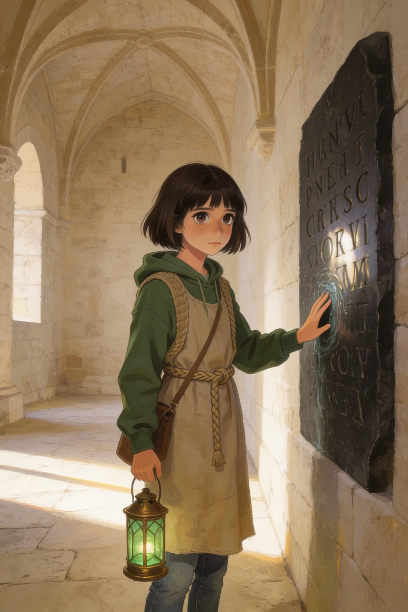
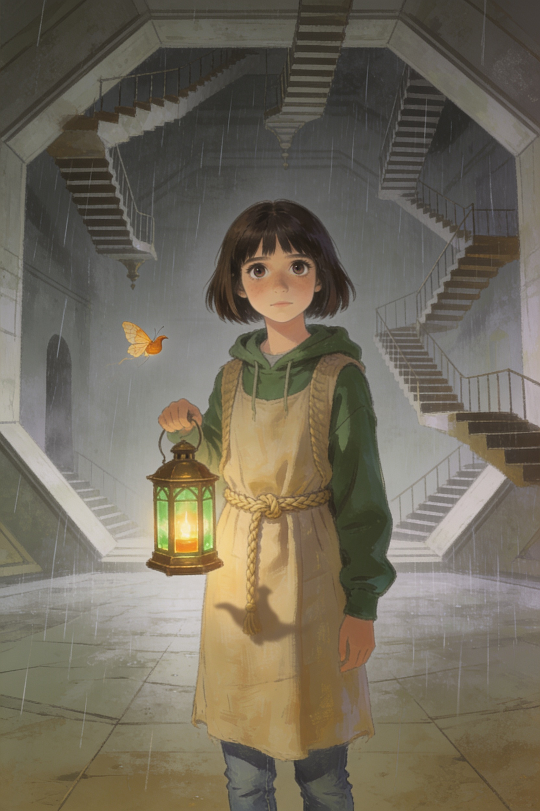
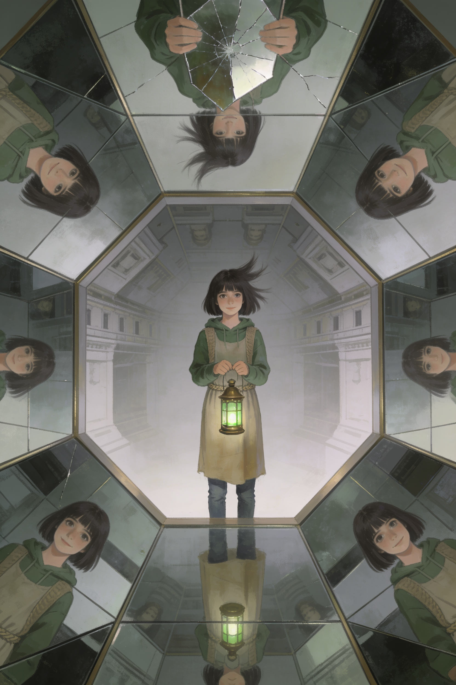
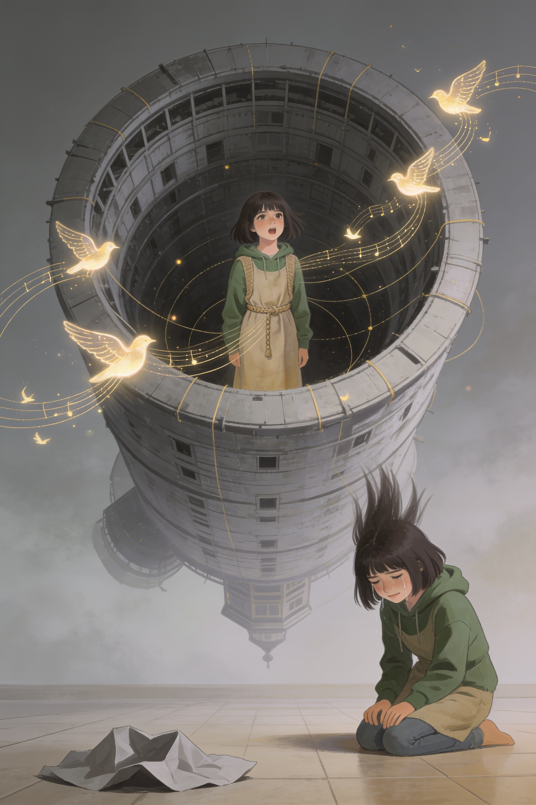
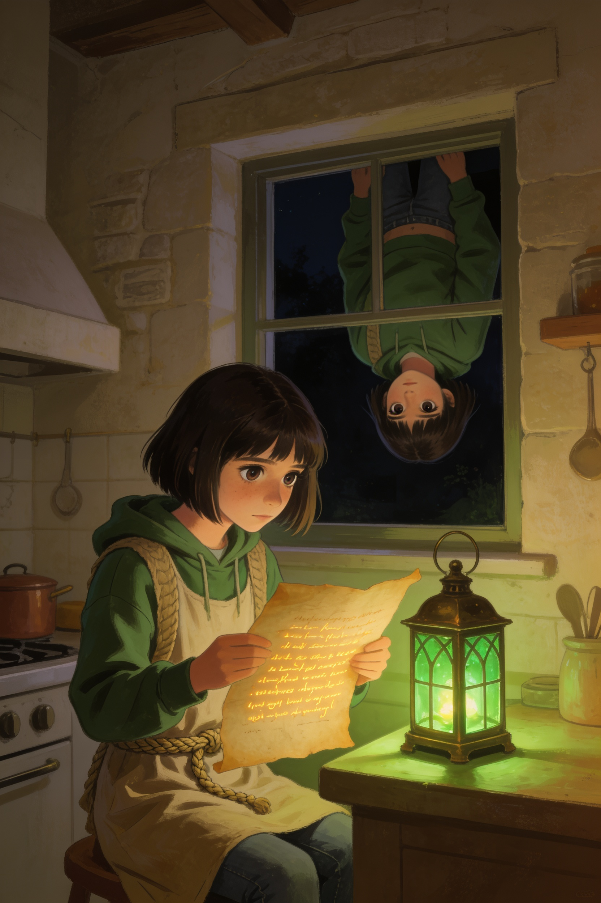

La Porta di Castel del Monte · Libro 1
La Pietra
al ContrarioOtto porte, un solo segreto
✦ ✦ ✦
Vlad

Vlad EditoreTaormina · Sicilia
La Porta di Castel del Monte · Libro 1
Vlad
Vlad Editore
La Porta di Castel del Monte · Libro 1
✦ ✦ ✦
Vlad
Vlad EditoreTaormina · Sicilia
La Pietra al Contrario
Libro 1 della collana La Porta di Castel del Monte.
Prima edizione digitale, 2026.
© 2026 Vlad. Tutti i diritti riservati.
Pubblicato da Vlad Editore, Taormina (Sicilia).
Testo di Vlad, scritto con l’aiuto dell’intelligenza artificiale. Le illustrazioni e la copertina sono state create con strumenti di intelligenza artificiale.
Personaggi e vicende sono frutto di fantasia; ogni somiglianza con persone reali è casuale. Federico II di Svevia, Michele Scoto e Castel del Monte sono esistiti davvero, ma ciò che fanno in questo libro è inventato: le note storiche, in fondo, dicono cosa è vero.
ISBN: in attesa di assegnazione
La Porta di Castel del Monte
Capitolo 1
Andria, oggi
• • •
Il pullman sa di merendine e di aria condizionata, e io ho già deciso che questa gita sarà noiosa.
Non è colpa della gita. È che a tredici anni hai imparato a riconoscere le giornate che promettono molto: di solito mantengono poco. «Visita didattica al Castel del Monte», c'era scritto sulla circolare, con un timbro e la firma della preside. Quando una cosa ha un timbro, difficilmente nasconde un'avventura.
— Alessia, mi stai ascoltando? — dice Sofia.
— Certo.
— Cosa ho detto?
— Che l'ottagono è un numero sacro.
Sofia mi guarda sopra la montatura degli occhiali. Ha sulle ginocchia il suo quaderno nero, quello con la copertina rigida e gli angoli rinforzati con lo scotch, dove scrive tutto ciò che trova interessante. Cioè tutto.
— Ho detto che gli otto lati non sono un caso — dice. — Il castello non è un castello vero. Non ha il fossato, non ha il ponte levatoio, non ha niente per difendersi. Federico II lo costruì per qualcos'altro e nessuno sa per cosa.
— Magari gli piaceva la geometria.
— Magari — dice lei, e scrive qualcosa, con l'aria di chi non è d'accordo per niente.
Dietro di noi Davide sta facendo il verso della guida turistica con la voce di un cartone animato, e Matteo, come sempre, ha scoperto dopo mezz'ora di viaggio che non ha portato il panino. Ginevra gli passa metà del suo senza dire una parola, perché Ginevra funziona così: organizza il mondo senza chiedere il permesso. Noemi, in fondo, tiene la fronte contro il vetro e disegna sul finestrino con un dito. Le colline della Murgia passano dietro di lei, bianche di sassi e di sole.
Io sono quella che guarda.
Lo sono sempre stata. Non so se si nasce così o se si diventa, ma da quando vivo con la nonna, cioè da quando avevo nove anni, ho imparato che le cose parlano a chi sta zitto abbastanza a lungo. Le crepe dei muri, le ombre alle quattro del pomeriggio, il modo in cui qualcuno dice «sto bene» e intanto si tocca il polso. È una storia che racconto solo a chi me lo chiede due volte.
Sofia me l'ha chiesto una volta sola, e poi è rimasta in silenzio accanto a me. È per questo che è la mia migliore amica.
✦
Stamattina, prima di uscire, la nonna mi aspettava in cucina.
Nonna Nunzia ha settantatré anni, le mani piccole e forti di chi ha impastato orecchiette per una vita, e un modo di guardarti come se ti stesse leggendo una pagina scritta da qualcun altro. Mi aveva preparato una schiacciata con l'olio e un'arancia già sbucciata, dentro un tovagliolo ricamato.
— Hai preso la felpa? — ha chiesto.
— Nonna, ci sono venticinque gradi.
— Alle tre di pomeriggio, dentro quelle pietre, ne fanno dodici. — Mi ha messo la mano sulla guancia. — Alessia.
— Sì?
Per un momento mi è sembrato che volesse dirmi molto più di quello che ha detto. Poi ha sorriso, e il sorriso le ha tirato un po' gli occhi in un modo che non le avevo mai visto.
— Guarda sempre da che parte è scritta una cosa — ha detto. — Quando entri in un posto vecchio, guarda da che parte è scritta una cosa.
— Che significa?
— Significa che chi ha fatto le cose antiche aveva un motivo per ogni dettaglio. Anche per quelli che sembrano sbagliati. — Mi ha dato un bacio sulla fronte e mi ha spinto verso la porta. — Vai, o perdi il pullman.
Mi sono messa lo zaino in spalla e non ho più pensato a quella frase. O forse sì. Forse ci ho pensato per tutta la strada, e non l'ho voluto ammettere nemmeno a me stessa.
✦
— Eccolo! — urla qualcuno in fondo al pullman.
Tutti si alzano di scatto e si schiacciano contro i finestrini, e la professoressa Greco batte le mani due volte, secca, che è il suo modo di dire «seduti» senza dirlo. Io non mi alzo. Aspetto un secondo. Poi guardo.
Il Castel del Monte sta in cima a una collina bassa, in mezzo a una campagna di ulivi e di muretti a secco, e non somiglia a niente di quello che ho visto. Non è alto come le torri dei film, non è nero, non è minaccioso. È chiaro, pallido, quasi color miele, e ha una forma così precisa che sembra disegnato col compasso: un ottagono con una torre a ogni spigolo, anche loro a otto lati, tutte uguali. Otto più otto. Il sole lo prende da una parte e lo lascia in ombra dall'altra, e per un attimo mi sembra che respiri.
— Madonna — sussurra Davide, e per una volta non fa il comico.
— Costruito attorno al 1240 — dice Sofia a bassa voce, quasi tra sé. — Per volere di Federico II di Svevia, l'imperatore che parlava sei lingue e che faceva studiare gli animali. Lo chiamavano Stupor Mundi. Lo stupore del mondo.
— E il castello, a cosa serviva?
— Non lo sa nessuno — dice Sofia. Poi, più piano: — Questo è il bello.
Il pullman si ferma nel piazzale. La professoressa Greco si alza, si sistema il foulard e ci conta con il dito, uno per uno, muovendo le labbra. Ha cinquant'anni, i capelli grigi tagliati cortissimi e lo sguardo di chi non ha mai perso un alunno in vent'anni di gite. Quando arriva a me, mi guarda un secondo più del necessario.
— Alessia — dice. — Tutto bene?
— Sì, professoressa.
— Sei pallida.
— Sono sempre pallida.
Lei annuisce, come se questa risposta le bastasse e non le bastasse allo stesso tempo, e passa avanti. Scendiamo uno dopo l'altro. L'aria della collina è fresca e profuma di erba secca e di pietra calda. Davanti a noi il castello occupa mezzo cielo.
Sofia mi prende per un braccio.
— Hai sentito cosa ho detto? — chiede. — Non lo sa nessuno. A cosa serviva, intendo.
— Ho sentito.
— Non ti incuriosisce?
Guardo l'ottagono. Guardo la porta d'ingresso, un portale di pietra con due colonne e un arco. Guardo le finestre, strette e alte come occhi socchiusi. E per la prima volta da quando è cominciata questa giornata sento qualcosa muoversi dentro di me, piccolo e freddo, come un sasso che cade nell'acqua molto lontano.
— Un po' — dico.
È una bugia, e la sento mentre la dico, come un sassolino nella scarpa. Mi incuriosisce moltissimo.
✦ ✦ ✦
La Porta di Castel del Monte
Capitolo 2
Castel del Monte, oggi
• • •
La guida si chiama signor Vito, ha i baffi e una voce che rimbomba come in una chiesa, e dopo dieci minuti ho già capito che ama questo castello più di quanto ami la sua famiglia.
— Otto torri! — dice, allargando le braccia nel cortile. — Otto lati! Otto sale per piano, e due piani! Sedici stanze, ragazzi, tutte uguali, tutte con una volta a crociera, tutte con le finestre rivolte in un punto preciso. Vi sembra un caso?
— No — dice Ginevra, che prende appunti.
— No! — conferma il signor Vito. — Questo non è un castello. Questo è un pensiero di pietra.
Il cortile è un ottagono più piccolo, dentro l'ottagono grande, con un bordo di pietra rosata e una vasca al centro. Alzo gli occhi. Il cielo ha la stessa forma, ritagliato dai muri: un ottagono azzurro. Mi viene il capogiro e mi appoggio a una colonna.
Entriamo. Dentro fa freddo davvero. Nonna Nunzia aveva ragione, e per questo mi infilo la felpa senza dire niente.
Le sale sono vuote e bellissime. Nessun mobile, nessun quadro: solo pietra chiara, volte altissime, e finestre che mandano dentro lame di luce lunghe e sottili. Il signor Vito ci spiega i camini, i bagni (i bagni! nel Duecento!, dice, e Davide fa il verso a un gabinetto), i marmi, le colonnine con i capitelli che sembrano foglie. Io seguo il gruppo e intanto guardo.
Guardo i muri. Guardo le mensole. Guardo le soglie.
— Alessia — sussurra Sofia. — Non ti sei persa niente?
— Cosa dovrei perdermi?
— Non lo so. Hai quella faccia.
— Quale faccia?
— Quella di quando cerchi una cosa che non sai com'è fatta.
Mi viene da ridere, perché ha ragione, e perché non so che altro dire. Andiamo avanti: sala uno, sala due, sala tre. La professoressa Greco cammina in coda, con le mani dietro la schiena. Ogni tanto la sento contare: sedici, diciassette, diciotto… Siamo ventitré. Quando arriviamo a ventitré, ricomincia.
✦
Nella quinta sala succede una cosa piccola.
Il gruppo è già passato nell'arco che porta alla sala dopo. Sofia sta sistemando gli occhiali, Matteo ha perso una scarpa o forse un'idea, Davide racconta qualcosa a Noemi con le mani. Io sono ultima, vicino alla parete, e per un momento non c'è nessuno a guardarmi.
Allora la vedo.
È sulla parete di fondo, sotto la finestra, a un metro da terra: una pietra più scura delle altre, di quelle usate come mensola. Sembra uguale a mille altre. Ma sopra, incise piano, quasi invisibili se la luce non cade di taglio, ci sono delle lettere.
Mi avvicino.
Sono otto. Le lettere sono otto, e così, a prima vista, non dicono niente. Non è che non conosca l'alfabeto: è che non vanno nel verso giusto. La terza è una C che guarda a sinistra. La quarta è una S capovolta. L'ultima è una R che sembra specchiata in uno stagno.
Guarda sempre da che parte è scritta una cosa.
Il cuore mi dà un colpo. Poi due. Quando lo sento battere nelle orecchie, capisco che la nonna lo sapeva. Non so cosa sapesse, ma sapeva che c'era qualcosa da guardare. Mi ha detto di farlo proprio oggi.
Passo l'indice sull'incisione. La pietra è fredda e sembra, per un attimo, più liscia di quello che dovrebbe essere. Come bagnata. Come se un'acqua sottile la attraversasse da dentro.
— Alessia! — chiama Sofia dall'arco.
— Arrivo!
Non ci vado. Resto con il dito sulle lettere. Penso che, se le leggessi da destra a sinistra, direbbero una parola. Provo, muovendo le labbra: R, O, V, E, S, C, I, O. Rovescio.
Rovescio.
Non faccio in tempo a pensare altro. La pietra sotto il mio dito scompare.
Non è che si spacchi, o si apra come una porta. Scompare e basta, come una macchia d'inchiostro nell'acqua. La mano mi finisce dentro il muro fino al polso, e il muro è morbido, tiepido e vuoto, come l'interno di un respiro. Il corpo non fa in tempo a decidere cosa fare: tira, il muro tira, e io cado in avanti dentro una luce grigia che non viene da nessuna parte.
— Alessia?
Sofia. La sua voce mi arriva da molto lontano, schiacciata, come se qualcuno parlasse a due stanze da me con la testa sott'acqua. Giro la testa. Vedo un rettangolo di sala che rimpicciolisce: la finestra, le lame di luce, la pietra che si richiude.
Il rettangolo diventa una fessura. Poi una linea.
Poi non c'è più.
Rimane il silenzio. Un silenzio denso, senza eco, senza rumore di scarpe, senza il respiro dei compagni. Rimango in ginocchio, con le mani aperte sul pavimento, e quando abbasso gli occhi vedo che il pavimento non è un pavimento: è un cielo.
Sotto di me passa lento un cielo grigio, pieno di nuvole che si muovono al contrario.
✦ ✦ ✦

La Porta di Castel del Monte
Capitolo 3
Dall'altra parte
◇ ◇ ◇
Rimasi in ginocchio per un tempo che non so misurare.
Là sotto non c'erano orologi, e questo lo capii subito. Il tempo non passava come passa da noi: sembrava respirare, andare e tornare, con onde lunghe e pigre. Mi alzai piano, tenendomi la testa con le mani, e guardai in su, perché in giù il cielo grigio mi faceva girare lo stomaco.
Sopra di me c'era il pavimento.
Non il mio pavimento, quello della quinta sala: un pavimento di pietra chiara, pulito, lucido, con un disegno a stella di marmo rosato. Lo vedevo capovolto, sospeso sopra la mia testa, come il fondo di una barca vista da sott'acqua. E tutt'intorno, in un silenzio assoluto, il castello continuava.
Era Castel del Monte. Lo riconobbi dalle volte, dalle finestre alte e strette, dalle colonne con i capitelli a foglia. Ma era nuovo. La pietra non aveva un graffio, i bordi erano nitidi come tagliati ieri, e nell'aria c'era un odore di calce fresca e di polvere di cantiere che da nessuna parte, nel castello vero, era rimasto. Come se i muratori avessero appena posato l'ultima pietra e fossero andati a mangiare.
Solo che non c'era nessuno. E le scale, che avrebbero dovuto salire, scendevano dal soffitto e finivano in aria. E fuori dalle finestre non pioveva dall'alto: la pioggia saliva. Lunghi fili d'argento si staccavano dalla terra e salivano verso un cielo che non aveva sole.
— Sono morta — dissi ad alta voce.
Non volevo dirlo. Non ci avevo nemmeno pensato. Ma la frase uscì dalla mia bocca come se qualcuno l'avesse tirata fuori con una pinza, e rimase nell'aria un attimo, tremando.
Mi tappai la bocca con una mano.
Non è vero, provai a pensare. Sto bene. Sto benissimo, ho solo preso una botta.
— Sto bene — dissi.
E subito, a mia insaputa, la mia voce aggiunse piano:
— Ho paura.
Il sangue mi tornò in faccia, caldo, in un colpo. Perché io non l'avevo voluto dire. Quella era la verità, e la verità era uscita da sola, contro la mia volontà, come l'acqua da un tubo rotto. Cercai di mentire ancora, di dire non ho paura, è tutto normale, so dov'è l'uscita. Le parole mi si fermavano in gola, si rifiutavano di partire.
In quel posto non si poteva mentire. Nemmeno a se stessi.
✦
— È inutile, sai — disse una voce piccola. — Lo provano tutti, la prima volta.
Mi girai così in fretta che quasi caddi.
Su un gradino che pendeva a mezz'aria c'era qualcosa di molto piccolo che brillava. Aveva la forma di una falena, con le ali sottili come carta velina, ma era fatta di luce: una luce calda, color ambra, che pulsava piano come una fiammella al vento. Intorno al suo corpo girava un'ombra sottile, a forma di lucerna, di quelle d'olio, di terracotta, con il becco lungo.
— Chi sei? — chiesi.
— Chi ero — disse la falena. — Questo è più facile. Ero la luce che un servo dimenticò accesa, la notte in cui hanno finito il castello. Nessuno è tornato a spegnermi. Nessuno si ricordò di me. — Batté le ali, e la luce tremò. — E così sono rimasta. Mi chiamo Lucerna.
— Lucerna.
— Il nome me l'hanno dato i miei simili. Siamo tanti, qui. Tutto quello che il mondo ha dimenticato viene a finire da questa parte, e se è dimenticato abbastanza, prende forma. — Mi guardò con due puntini d'ombra. — Tu invece non sei dimenticata. Sei viva. Sei qui per sbaglio.
— Dove, qui?
— Nell'Oblio.
La parola cadde tra noi come una pietra in un pozzo. L'Oblio. Non lo avevo mai sentito. Ma lo capii subito, come si capisce una lingua che si è sempre saputa: era il luogo dove va a finire ciò che si smette di ricordare. Le canzoni che nessuno canta più. I nomi che nessuno pronuncia. Gli oggetti persi, le promesse non mantenute, i sogni lasciati a metà. Tutto quello che il mondo di sopra lascia cadere, qui si ammucchia, prende forma e continua a esistere, ma nel rovescio.
— Allora è vero — dissi, a bassa voce. — Il rovescio. La parola sulla pietra.
— La porta — disse Lucerna. — Una delle otto. Chi la tocca nel modo giusto, passa. Ma quasi nessuno la tocca nel modo giusto. Tu come hai fatto?
— Ho solo letto da destra a sinistra.
— Leggere nel verso giusto non è mai solo leggere — disse Lucerna, e mi parve di vedere qualcosa che somigliava a un sorriso. — Guardavi bene, vero? Sai guardare. È raro.
Guarda sempre da che parte è scritta una cosa. Mi scese un brivido lungo la schiena. Pensai alla nonna in cucina, alla sua mano sulla mia guancia, al modo in cui mi aveva guardata prima di lasciarmi andare.
— Devo tornare — dissi. — La mia amica mi sta cercando. Mi sono spaventata, sono caduta, e…
— La porta è chiusa — disse Lucerna. — Si apre solo da fuori, a meno che tu non abbia la chiave giusta.
— Che chiave?
— Non lo so. Io sono solo una luce. — Si strinse nelle ali. — Ma qui da qualche parte c'è una cosa che chi arriva deve trovare. Una cosa che aspetta. Forse ti aiuterà.
— Che cosa?
— Non si può dire. — Il suo corpo si accese un po' di più. — Provo a dirlo, ma sento che non esce. Funziona così. Ti porto, e la vedrai.
✦
Camminammo per un tempo che non so dire.
Scendemmo scale che salivano e salimmo scale che scendevano, e a un certo punto smisi di cercare di capire dov'era il sopra e dov'era il sotto, perché Lucerna volava davanti a me senza esitare e io, in fondo, non avevo scelta. Il castello era una copia sbiadita di sé stesso: ogni sala uguale a quella vera, ma con qualcosa fuori posto. In una i camini erano al soffitto. In un'altra le finestre guardavano dentro invece che fuori, e mostravano stanze piene di nebbia.
Intorno a noi, nell'aria, passavano cose.
Oggetti, piccoli, che galleggiavano senza fretta: una scarpa da bambino, un pettine d'osso, una bambola di pezza senza un occhio. Ogni tanto un'ombra più grande attraversava il corridoio in silenzio, e Lucerna mi faceva cenno di non guardare. Una volta sentii cantare: una voce di donna, lontanissima, che faceva una ninna nanna in una lingua che non conoscevo. Mi fermai. Non so perché mi veniva da piangere.
— Sono le Cantilene — sussurrò Lucerna. — Le ninne nanne dimenticate. Non fanno male. Fanno solo malinconia.
Arrivammo in fondo a un corridoio e le pareti si aprirono su una sala.
Era grande, molto più grande di qualunque sala del castello vero. L'ottagono era perfetto, con il soffitto altissimo e otto grandi archi che si aprivano sul buio. Al centro c'era un piedistallo di marmo verde, scuro come l'acqua di uno stagno.
— L'Aula Oblivionis — disse Lucerna, con una specie di rispetto. — Il cuore dell'Oblio. Quello che è qui, è qui da prima che il castello fosse finito.
Sul piedistallo c'era una lanterna.
Era piccola, grande come una mano aperta, ma pesante da guardare. Il telaio era di bronzo, annerito e lavorato a otto facce, con piccole lettere incise lungo le giunture: lettere che, mi accorsi con un colpo al cuore, guardavano tutte nel verso sbagliato. I vetri erano di un verde profondo, verde antico, come bottiglie che hanno passato secoli sotto terra. Dentro non c'era nessuna fiamma.
Eppure brillava.
Brillava di una luce che non veniva dall'interno, ma da qualche parte dentro, più in fondo: una luce che aspettava.
— È per te — disse Lucerna.
— Perché per me?
— Perché non lo so. — Mi guardò con tutta la sua piccola luce. — Ma questa è la lanterna dei ricordi. E la lanterna dei ricordi non si lascia prendere da chiunque.
Mi avvicinai. Il piedistallo era freddo come una lapide. Allungai una mano e la posai sul manico, anch'esso di bronzo, anch'esso gelato.
Per un istante non successe niente.
Poi la luce rispose. Una scintilla si accese dentro il vetro, piccola come una lucciola, e crebbe, e dai vetri verdi si sparse sulle pareti dell'Aula una luce color miele, calda, viva. Sentii qualcosa risalirmi dalle dita lungo il braccio, non dolore e non piacere, ma come se qualcuno mi avesse riconosciuta.
— Guarda — sussurrò Lucerna.
Alzai la lanterna all'altezza degli occhi. Dentro la luce, come in uno specchio d'acqua, qualcosa si muoveva: una stanza chiara, delle volte di pietra, delle lame di sole.
Una ragazza con gli occhiali, un quaderno nero stretto al petto, in piedi accanto a una pietra senza lettere. Aveva il viso rigato di lacrime, e stava gridando il mio nome.
✦ ✦ ✦

La Porta di Castel del Monte
Capitolo 4
Castel del Monte, visto dalla lanterna
• • •
Dalla lanterna posso vedere cosa succede di là. Non tutto, e non sempre, ma abbastanza da farmi male.
La luce verde trema contro il mio viso e, dentro, la quinta sala continua a esistere come un'immagine in una goccia. Sofia è in ginocchio sotto la finestra. Con i palmi aperti picchia sulla parete, piano, poi più forte, passando le mani sulla pietra come se cercasse una maniglia.
— Alessia! — Il suo grido arriva a pezzi, attraverso l'acqua. — Alessia, rispondimi!
— Sono qui — dico. — Sofia, sono qui.
Lei non mi sente. Ovviamente non mi sente. Ma io continuo a dirlo, a bassa voce, perché l'unica cosa che non so fare è stare zitta mentre qualcuno mi chiama.
— La lanterna mostra, non porta — dice Lucerna, posata sul bordo del piedistallo. — Puoi vedere tutto quello che è nascosto. Ma non toccarlo. Non ancora.
— E il tempo? Per loro quanto è passato?
— Poco. Pochissimo. Il tempo di là cammina in un altro modo. — La falena arriccia le ali. — Ma non è mai uguale. Per te sono ore. Per loro, forse, un respiro. O forse giorni. Dipende da come si muove l'Oblio.
Dentro la goccia di luce, Sofia si è alzata. Si è asciugata gli occhi con la manica. Ha chiuso il quaderno nero, ha preso fiato come si fa prima di un tuffo, e ha attraversato l'arco della sala quattro a passi corti e veloci.
✦
Gli altri sono nel cortile ottagonale, tutti in cerchio intorno al signor Vito, che sta spiegando i capitelli. Il sole li fa lunghi e sottili, come ombre di insetti.
La professoressa Greco è in coda, con le mani dietro la schiena. Sta contando.
— …venti, ventuno, ventidue.
Si ferma. Ci riprova, muovendo l'indice a mezz'aria.
— Ventidue.
— Professoressa — dice Sofia, senza fiato.
— Un momento, Sofia, sto contando. — La Greco aggrotta la fronte. — Ventidue. Eppure ne avevo… — Si ferma ancora. Si porta due dita alla tempia. — Strano. Credevo che…
— Alessia è sparita.
Le parole cadono nel cortile come un bicchiere rotto.
La Greco si volta lentamente. E io, dall'altra parte, vedo una cosa che mi stringe lo stomaco: per un secondo, solo per un secondo, il suo viso si svuota. Gli occhi restano gli stessi, ma dentro non c'è niente. Come se qualcuno avesse passato una spugna sopra un nome.
— Chi? — dice.
— Alessia. — Sofia ha la voce che trema. — Alessia, professoressa. Ha un caschetto, è sempre pallida, è in classe con noi da due anni, ci siede davanti, sta accanto a me da due…
— Alessia — ripete la Greco. Lo ripete piano, come si ripete una parola in una lingua straniera. Poi, di colpo, il viso le si accende. Fa un passo indietro e si porta la mano alla bocca. — Alessia. Mio Dio. Alessia.
Sofia chiude gli occhi.
— Dov'è? — Adesso la Greco la tiene per le spalle, e la stringe forte. — Dov'è, Sofia? Dimmi cosa è successo!
— Era nella quinta sala. Poi… — Sofia esita. Io so che sta cercando le parole per dire una cosa impossibile, che non vuole essere presa per pazza. — Poi non c'era più.
— Non può essere sparita. Non così, in un attimo.
— Lo so.
La Greco guarda il cortile, dove i compagni li stanno fissando. Qualcuno si è avvicinato.
— Cosa succede? — chiede Davide.
— Alessia è sparita — dice la Greco.
Davide inclina la testa. Sorride in quel modo vago che fa quando non ha capito una battuta.
— Chi?
È un secondo. Un secondo soltanto. Ma io lo vedo dentro la lanterna come lo vedo adesso, con la nitidezza di un taglio: tutti, uno dopo l'altro, restano con la faccia sospesa. Matteo si gratta la testa. Ginevra apre la bocca e la richiude. Noemi, che non parla mai, mormora qualcosa che sembra «Alessia?», ma lo dice come si dice un sogno che sfugge.
— Quella nuova? — dice Matteo.
— Non è nuova — dice Sofia. — È qui da due anni.
— Ah. Sì. Certo. — Matteo ride, un po' a disagio. — Scusa. Mi era uscito di mente.
Mi era uscito di mente.
Sento qualcosa di freddo, di profondo, aprirsi dentro di me. Non è paura, non esattamente. È il contrario della paura: è la sensazione di un'impronta che si riempie d'acqua e piano piano scompare.
— Lucerna — dico, con la voce che si incrina. — Mi stanno dimenticando.
— Sì — dice lei. Non mi dà una scusa. Non mi dice che non è vero. Qui non si può mentire, nemmeno per gentilezza. — È quello che fa l'Oblio. Quando una persona è dentro, il mondo di sopra comincia a lasciarla andare. Piano. Un nome alla volta.
— E io?
— Tu sei la chiave di te stessa. Finché ti ricordi chi sei, ti ricordano anche loro. Ma più passa il tempo…
Non finisce. Non ce n'è bisogno.
Ripeto il mio nome. Lo ripeto piano, dentro la bocca: Alessia, Alessia, Alessia. Il nome della nonna. Il nome di Sofia. Il numero della mia scuola, le orecchiette del martedì, il colore della mia felpa. Le cose che sono mie. Le tengo strette come monete in un pugno.
✦
Dentro la lanterna, Sofia ha tolto il quaderno dalla tasca dello zaino.
Lo apre su un muretto, senza badare agli altri che parlano, alla Greco che dà ordini concitati al signor Vito, ai compagni che si guardano senza capire. Prende una penna. Scrive in grande, in stampatello, nel mezzo di una pagina bianca:
ALESSIA.
La sottolinea due volte. Poi scrive, più piccolo, con la mano che trema un poco:
Ti chiami Alessia. Hai tredici anni. Vivi con la nonna Nunzia. Ti piacciono le arance sbucciate e i muri vecchi. Non ti ho dimenticata. NON DEVO DIMENTICARTI.
Sofia ha gli occhi pieni di lacrime e il viso duro di chi non ha nessuna intenzione di arrendersi. Rilegge quello che ha scritto. Lo rilegge una seconda volta. Poi lo ripete a voce alta, piano, come una preghiera.
Io, nella luce verde dell'Oblio, sento le lacrime scendere sul mio viso senza chiedermi il permesso.
— Ti ho trovata — mormoro. — Sofia, ci sei ancora.
— Forte, quella ragazza — dice Lucerna.
— È la migliore amica che esiste.
— Meglio così. — La falena abbassa la luce. — Perché gli amici che non ti dimenticano sono la cosa più rara che c'è, da queste parti. E la più utile.
Vorrei rispondere. Ma in quel momento succede un'altra cosa.
Il vetro della lanterna, sotto le mie dita, si appanna. La luce dentro si fa più cupa. E nel riflesso curvo del vetro verde, dove dovrebbe esserci solo il mio viso, ne vedo un altro.
È appena dietro la mia spalla. Ha il mio stesso naso, la mia stessa fronte, i miei stessi capelli. Ma è capovolto. Sta a testa in giù, i capelli che cadono verso l'alto, e mi guarda.
E sorride.
✦ ✦ ✦
La Porta di Castel del Monte
Capitolo 5
L'Oblio
◇ ◇ ◇
Il riflesso scomparve prima che potessi gridare.
Il vetro verde tornò vuoto, e dentro la lanterna rimase soltanto il mio viso, bianco come un foglio. Mi voltai di scatto: dietro di me c'erano solo l'Aula, gli archi neri e il piedistallo di marmo. Nessuno.
— L'hai vista — disse Lucerna. Non era una domanda.
— Chi era?
— Non lo so. — La falena si era accucciata sul mio polso, e sentivo il suo calore battere piano contro la pelle. — Ma se tu l'hai vista, vuol dire che lei ha visto te. Qui, quando uno guarda, anche l'altro guarda. Dobbiamo andare.
— Dove?
— Dove c'è una porta. — Si staccò dal braccio e volò verso l'arco più vicino. — Ti spiego mentre andiamo. Ma non fermarti.
✦
Gli archi dell'Aula erano otto, tutti uguali, e in fondo a ciascuno c'era una porta.
Non porte di legno: porte di specchio, alte il doppio di un uomo, senza maniglia. Camminandoci davanti vedevo il mio viso scorrere da una all'altra, un po' diverso in ognuna, come in una fila di acque.
— Otto torri — disse Lucerna, volando ai miei occhi. — Otto porte. Tutte e otto portano fuori dall'Oblio, ma non nello stesso posto. E non nello stesso tempo.
— Non nello stesso tempo?
— Una porta guarda il tuo giorno. Quella da cui sei entrata. Un'altra guarda un giorno che non ti riguarda ancora. Un'altra, uno molto antico. — La luce le tremò. — Ognuna è una finestra su un momento diverso del castello. E il castello dura. È fatto per durare.
— Perché?
— Perché è stato costruito apposta. — Mi guardò con i suoi due puntini d'ombra. — Chi l'ha costruito lo sapeva. Sapeva cosa c'era sotto, e ha messo otto serrature su otto porte, perché nessuno potesse passare senza permesso. Non so altro. Ero una lucerna, non una guardiana.
— E io da dove sono entrata?
— Dalla più giovane. Quella aperta ultima, in un tempo che per te è oggi. È la sola che si sia aperta da fuori. Le altre sono chiuse. Da questa parte, e da quella.
Mi fermai davanti a uno degli specchi. Il mio viso mi guardò, pallido, spettinato, con la lanterna in mano. Sembravo una bambina che gioca ai fantasmi. Ma gli occhi erano di una persona che sta imparando in fretta.
— Se sono chiuse tutte — dissi — come torno a casa?
— Non puoi. Non ancora.
— Come non ancora?
— La porta del tuo tempo si apre solo da fuori. Devi trovare chi la apre. Oppure… — Lucerna esitò. — Oppure passare per un'altra porta, andare nel tempo di un'altra epoca, e da lì cercare la strada.
— Io voglio solo tornare da Sofia.
— Lo so. — Mi sfiorò la guancia con un'ala. — E lei ti aspetta. Ma l'Oblio non è un posto dove si resta fermi. Se rimani qui, ti dimenticano. Se vai avanti, forse ti ritrovano.
Non risposi. Stringevo il manico della lanterna così forte che le nocche erano diventate bianche.
✦
Fu allora che sentimmo il rumore.
Un fruscio, lungo e leggero, come di carta strisciata sul pavimento. Veniva dal corridoio alle nostre spalle. Lucerna smise di volare, e la sua luce si abbassò fino a diventare quasi niente.
— No — sussurrò. — Non adesso.
— Che cos'è?
— Il Custos Vacuus.
Non volli sapere altro. Mi voltai.
In fondo al corridoio, dove l'arco si apriva sul buio, c'era una figura alta. Alta più di due uomini, vestita di un lungo mantello grigio che strisciava a terra come carta bagnata. Sopra il mantello, dove avrebbe dovuto esserci una testa, c'era un cappuccio, e dentro il cappuccio non c'era niente. Non buio: niente. Un vuoto così completo che l'occhio non riusciva a posarsi.
La figura avanzò. Non faceva rumore di passi: il mantello frusciava, e basta. Intorno a lei le cose dimenticate, la scarpa da bambino, il pettine d'osso, si ritraevano come foglie davanti al vento.
— Prende i nomi — disse Lucerna, in un soffio. — Chiunque ne abbia ancora uno. Se ti tocca, ti sfila la memoria come un guanto. Non ti uccide. Ti svuota.
— Come si ferma?
— Non si ferma. Si evita. Corri!
Corsi.
Corsi come non avevo mai corso in vita mia, con la lanterna che oscillava e mi sbatteva contro la gamba, giù per una scala appesa, su per un'altra, attraverso una sala dove il pavimento era un lago di nebbia. Il fruscio ci inseguiva, ora vicino, ora lontano, mai davvero lontano. A ogni svolta Lucerna mi guidava con un guizzo di luce, ma la luce si faceva sempre più piccola.
A un tratto l'ombra della falena si spense del tutto.
— Lucerna! — gridai.
— Qui. — Era una voce minuscola, tra i miei capelli. — Mi sono spaventata. Non so più la strada.
Mi fermai davanti a una parete cieca, ansimando. La parete era di pietra liscia, senza archi né porte. E il fruscio, dietro di noi, era a pochi metri.
Alzai la lanterna. Non lo decisi: lo fecero le mie mani. La luce verde andò a battere contro il muro, e per un attimo sulla pietra comparve qualcosa.
Un contorno. Sottile come un capello. Una linea a forma di arco, che prima non c'era.
Può vedere tutto quello che è nascosto.
Posai la mano libera sulla linea. La pietra cedette con un sospiro, come una porta socchiusa da secoli, e un corridoio stretto si aprì davanti a noi.
✦
Mi ritrovai in una torre.
Era una scala a chiocciola, ripidissima, e a ogni gradino c'era uno specchio incastrato nel muro. Specchi piccoli, grandi, rotondi, ovali, tutti pieni di una luce lattiginosa. Salii senza pensare, con il cuore in gola. In cima c'era una stanza ottagonale con le pareti coperte di specchi dal pavimento al soffitto.
— Turris Speculorum — disse Lucerna, tra i miei capelli. — La torre degli specchi. Da qui si può uscire. Ma bisogna…
Si interruppe.
In ogni specchio, uno dopo l'altro, qualcuno era comparso.
Una ragazza. Con il mio viso, i miei capelli, la mia felpa verde. Ma non come me: capovolta, appesa a testa in giù, nel riflesso, con i capelli che cadevano verso l'alto e un sorriso fermo, calmissimo, quasi dolce.
Cento volte. Duecento volte. Tutte uguali.
— Ciao, Alessia — disse.
Non l'aveva detto in uno specchio solo. L'aveva detto in tutti, insieme, con una voce che era la mia ma più bassa, più profonda, come una voce vista dal fondo di un pozzo.
— Chi sei? — La mia voce tremava.
— Sono te.
— Non è vero.
— Qui non si può mentire. Lo sai. — Si fece avanti, in tutti gli specchi, a testa in giù, muovendosi come se camminasse sul soffitto. — Il mio nome è il tuo, con le lettere storte, come tutto da questa parte. Mi chiamano Ailessa.
— Cosa vuoi?
— Quello che vuoi tu. — Aveva la testa un po' inclinata, e io mi accorsi che anche lei teneva qualcosa in mano: non una lanterna, ma un frammento di specchio incrinato. — Una casa. Una nonna. Un'amica che scrive il mio nome su un quaderno. Il tuo posto.
— Non puoi averlo.
— Posso. — Sorrise, e questa volta non c'era niente di dolce. — È già cominciato. Non senti? Più passa il tempo, e meno ti ricordano. Più ti dimenticano, e più io divento reale.
Alzai la lanterna. Non pensai a cosa facevo: la puntai verso di lei, verso gli specchi, per scacciarla, per accecarla.
La luce verde partì dai vetri… e quando toccò lo specchio dov'era Ailessa, si spense.
Come una candela in un pozzo. Lei non si mosse nemmeno.
— Non funziona su di me — disse piano. — La luce che vede tutto non vede me. Perché io sono quello che tu hai dimenticato di essere.
Dietro di noi, il fruscio.
— Alessia! — gridò Lucerna. — Adesso!
Non guardai più Ailessa. Mi voltai verso la parete di specchi più lontana e alzai di nuovo la lanterna. Questa volta non verso lei, ma verso lo specchio. Cercai il contorno. Lo trovai: una sottile linea d'argento, a forma di porta, che solo la lanterna poteva mostrare.
— Non andare! — Ailessa non gridava, ma la sua voce riempì la stanza. — Se passi, non torni. Le porte non si aprono due volte!
Poggiai la mano sullo specchio.
Era caldo. Dietro, un odore: calce, fumo, sudore di uomini al lavoro. E un rumore di martelli su pietra, lontano, regolare, tantissimi, tutti insieme.
— Ci vediamo presto — disse Ailessa, alle mie spalle.
Chiusi gli occhi, strinsi la lanterna al petto, e passai.
✦ ✦ ✦

La Porta di Castel del Monte
Capitolo 6
Castel del Monte, anno 1249 circa
✦ ✦ ✦
Il sole mi accecò.
Dopo il grigio dell'Oblio, quella luce mi sembrò un pugno: bianca, calda, vera. Chiusi gli occhi e li riaprii a fessura. Ero in ginocchio sull'erba, con la lanterna stretta al petto e le mani che tremavano, in mezzo a un cortile pieno di polvere.
E di rumore.
Martelli. Seghe. Il gridare di uomini che si chiamavano tra loro in una lingua che non era del tutto italiano: parole tagliate, suoni larghi, come un dialetto che avessi già sentito dalla nonna ma più antico. Carretti stridevano su una pietraia. Una carrucola cigolava. Da qualche parte un bue muggiva con la pazienza dei buoi.
Intorno a me, il Castel del Monte. Il castello.
Non il castello grigio e vuoto che avevo visitato un'ora prima. Questo era bianco, quasi abbagliante, con le pietre pulite come lavate, e le torri così alte che dovetti rovesciare la testa all'indietro. Sulle pareti erano ancora appoggiate le impalcature di legno, legate con corde grosse come il mio polso. E sopra, sulle impalcature, uomini scalzi o in sandali, con la camicia aperta e le braccia scure di sole, davano gli ultimi colpi di scalpello.
Fuori dall'ottagono non c'era niente: né il piazzale, né il parcheggio, né il bar. Solo la collina, spoglia, rasata, con qualche ulivo e una strada di terra battuta. Al posto del cielo di oggi c'era un cielo di un blu profondo, antico, senza una scia d'aereo.
— È il Duecento — dissi.
Non lo avevo nemmeno deciso. Mi era uscito di bocca, come tutte le cose vere. Dietro di me, nel muro, dove avrei dovuto trovare lo specchio, c'era solo un tratto di pietra, liscia e grigia. Nessuna porta. Nessun riflesso. Nessuna Ailessa.
Mi tirai in piedi. Le gambe non mi reggevano. Avevo il naso pieno di calce e la bocca secca, e addosso la mia felpa verde, i jeans, le scarpe da ginnastica: una macchia moderna in mezzo a un quadro dipinto.
— Ehi!
Mi girai.
✦
Un ragazzo mi stava fissando da cinque metri di distanza, con un secchio di calce in mano e la bocca aperta.
Poteva avere la mia età, forse un anno di più. Era magro, scuro di pelle, con un ciuffo di capelli neri tutti dritti e gli occhi grandi, curiosi, di un marrone chiarissimo. Portava una tunica corta, di tela grezza, sporca di bianco fino ai gomiti, e dei calzari legati con strisce di cuoio. Aveva un cerchio di calce secca intorno alla bocca.
Appena mi vide, lasciò andare il secchio.
Il secchio cadde con un tonfo e la calce si sparse sull'erba.
— Madonna — disse il ragazzo. — Come… da dove… non c'era nessuno. Ero qui. Ho guardato la parete. Ho guardato… e tu sei uscita dal muro.
— Lo so — dissi. — Mi dispiace.
Non so perché mi scusai. Forse perché ero abituata a scusarmi quando qualcuno rimaneva a bocca aperta.
Lui mi fissò ancora. Poi si guardò intorno, lesto, per vedere se qualcuno ci aveva notati. Gli operai erano lontani, sull'altro lato del cortile, tutti occupati. Si avvicinò a me a passi cauti, come ci si avvicina a un cavallo spaventato.
— Sei una strega? — sussurrò.
— No!
— Una fata?
— No. — Alzai le mani. — Mi chiamo Alessia. Sono una ragazza. Normale. Vengo da…
Mi bloccai. Non potevo dire dal futuro. Poi capii che la regola dell'Oblio si era fermata alla porta. Qui, in questo sole, potevo mentire quanto volevo. Ma qualcosa, in fondo allo stomaco, mi disse che non dovevo farlo. Non con lui.
— Vengo da lontano — dissi. — Molto lontano. E non so come sono arrivata qui.
— Dalle parti del Nord? Dalla Germania?
— Più lontano.
— Dall'Oriente? Dall'Africa? — Aveva gli occhi accesi. — Dai paesi del Prete Gianni?
— Più o meno.
— Che vestito strano hai. — Allungò una mano per toccare la manica della felpa, poi la ritrasse come scottato. — È di lana? Non si vede la trama.
— È una felpa.
— Una fel-pa — ripeté lui, con rispetto. Poi sorrise di colpo, un sorriso largo e sghembo, e capii che mi piaceva. — Io sono Ruggero. Apprendista del mastro Bartolomeo, capo dei tagliapietre. Quattordici anni, e da tre mi picchiano quando sbaglio un angolo.
— Piacere.
— Il piacere è mio, donna Alessia. — Fece un piccolo inchino, buffo e preciso, imparato di sicuro guardando qualcuno più importante. Poi si fece serio. — Ma non puoi stare qui. Se ti vedono gli uomini della guardia… tu non puoi stare qui. Il castello è finito da due giorni e l'Imperatore deve ancora venirlo a vedere. Nessuno entra, nessuno esce, senza un permesso scritto.
— Io non ho nessun permesso.
— Lo so. — Si grattò la testa, lasciando una striscia bianca tra i capelli neri. — Ma non vedo come potrei mandarti via. Dal muro non puoi tornare. Quindi…
Si guardò intorno ancora una volta. Poi si tolse dalle spalle un mantello di lana sporca, grigia, che portava arrotolato e che io non avevo notato.
— Mettitelo — disse. — Copri quel fel-pa. E tieni giù la testa.
✦
Ci infilammo in una porticina laterale, in una stanza che odorava di sego e di paglia.
Ruggero chiuse l'uscio con una spinta e si appoggiò contro il battente, ansimando. Io mi lasciai cadere su un sacco di segatura. Il mantello puzzava di capra e di fumo, ma era caldo, e per la prima volta da quando ero caduta nella pietra smisi di tremare.
— Allora — disse Ruggero. — Raccontami.
— Che cosa?
— Tutto. — Si sedette di fronte a me, a gambe incrociate. — Sei uscita da una parete di pietra. Hai dei vestiti che non ho mai visto. Parli come i veneziani ma con parole che non conosco. E hai in mano una lampada — indicò la lanterna — che non ha olio, né lucignolo, e che brilla da sola.
Guardai la lanterna. Il verde dei vetri era tornato opaco, ma sotto, in fondo, una brace di luce continuava a pulsare piano. Mi chiesi se la luce vedesse anche qui. Se mi avesse portata proprio dove dovevo andare.
— Non so se mi crederesti.
— Prova.
— Vengo dal futuro.
Non lo dissi con il tono di un annuncio. Lo dissi come si dice una cosa vera e troppo grande, a voce bassa, quasi con vergogna.
Ruggero non rise. Non fece neppure quella smorfia che aspettavo. Rimase immobile, e poi, molto lentamente, si segnò con la mano destra.
— Quanto lontano? — chiese.
— Tanto. Più di settecento anni.
— Settecento — sussurrò. — E il castello… esiste ancora?
— Sì. È lì. È vuoto, ma è in piedi. Tutti vengono a vederlo. Nessuno sa a cosa serviva.
Ruggero chiuse gli occhi un momento. Quando li riaprì, brillavano.
— Allora è vero — disse. — Il mastro Bartolomeo dice sempre che questo castello non serve a niente. Che non ha fossato, non ha ponte, non ha neppure una cantina da difesa. Dice che l'Imperatore è matto. Che è un matto geniale, ma sempre matto. — Si strinse le ginocchia con le braccia. — Io non ho mai capito. Ma ho una cosa. Un sospetto. Che lo abbia fatto per tenere qualcosa chiuso.
— Per tenere chiusa una porta — dissi.
Ruggero mi guardò. Vidi i suoi occhi allargarsi, e capii che aveva sentito, con il corpo e non con la testa, che quello che dicevo aveva un senso.
— Io so dov'è — disse piano. — Non l'ho mai detto a nessuno. In una torre, quella verso Nord-Est. Ogni notte, quando i lavori si fermano, sento rumori da dietro il muro. Come di qualcuno che bussa. Sempre uguale. Sempre otto volte.
Il cuore mi saltò in gola.
— Otto — ripetei.
— Otto — disse Ruggero. — Poi silenzio. Poi ricomincia.
Guardai la lanterna. Dalla fessura del vetro, mentre lui parlava, sembrava che la luce si fosse alzata di un dito, come un animale che drizza le orecchie.
Per la prima volta dopo ore, qualcosa mi diceva che non ero capitata lì per sbaglio.
✦ ✦ ✦
La Porta di Castel del Monte
Capitolo 7
Andria, visto dalla lanterna
• • •
Ruggero mi ha portato un pezzo di pane duro e una ciotola di zuppa di ceci, e poi si è addormentato contro il sacco di segatura con la bocca aperta. Io no. Ho la lanterna sulle ginocchia e un'ora di silenzio davanti.
Nel vetro verde la luce si muove, e io le chiedo di farmi vedere casa.
Non so come si faccia a chiedere una cosa a una lanterna. Ma so che guardare con attenzione è quasi la stessa cosa, e così guardo, fissando il centro del vetro, pensando alla cucina di nonna Nunzia: il tavolo di formica, il pentolino nero, la tenda a quadretti. La luce si increspa. E all'improvviso c'è.
È sera, là. Non è la stessa ora di qui: è già buio dietro i vetri, e la lampada sopra il tavolo fa un cerchio giallo. Sul tavolo c'è un piatto di orecchiette che nessuno ha toccato. Davanti, sedute una di fronte all'altra, ci sono la nonna e Sofia.
Sofia ha ancora le scarpe sporche della collina. Ha gli occhi rossi e il quaderno stretto tra le mani, e ogni tanto lo apre per rileggere la pagina con scritto il mio nome.
— Lo so — dice la nonna. — Ti credo.
— Davvero?
— Non devi spiegarmi niente. Ti credo da quando la professoressa mi ha telefonato. — La nonna ha un fazzoletto in mano e non lo usa. Ha la schiena dritta, e un modo fermo e composto di tenersi, come quando si aspetta una notizia grave da tanto tempo. — Sofia, ascolta. Quello che ti racconto adesso non lo sa nessuno. Nemmeno Alessia.
Sofia deglutisce.
— Nemmeno Alessia?
— Nemmeno lei. Non ancora.
La nonna si alza. Va al credenzone della cucina, quello con le ante di vetro smerigliato, e dal ripiano più alto tira giù un libro. Non un libro: un quaderno grande, rilegato in tela scura, con gli angoli consumati dal tempo. Lo posa sul tavolo con cura, come se pesasse molto più di quello che pesa.
— Questo è il libro di casa — dice. — Ogni generazione ci aggiunge qualcosa. Mia nonna scrisse la prima pagina che ho letto. Ma la prima pagina in assoluto, quella che sta sotto tutte le altre, è più vecchia di settecento anni.
Io, dalla lanterna, trattengo il respiro.
La nonna apre il quaderno. Dentro ci sono pagine di carta di epoche diverse: alcune gialle e sottili come cipolla, altre spesse, altre di carta da pacco. Inchiostri di tutti i colori. Calligrafie di mani che non esistono più. In fondo, appiccicato con la colla, ce n'è uno più antico di tutti, di pergamena scura, scritto in una lingua che non riesco a leggere.
— La nostra famiglia — dice la nonna, piano — non è di qui per caso. Veniamo da gente che lavorava a Castel del Monte quando lo costruivano. Muratori, scalpellini, un paio di vetrai. Uno di loro, un certo Bartolomeo, vide una cosa. Non so cosa. Non l'ha mai scritto. Ma da allora, in ogni generazione, qualcuno della famiglia ha sorvegliato quel posto.
— Sorvegliato…
— Non per mestiere. Per dovere. — Gira una pagina. — Ci tramandiamo una frase. Ce l'ha detta mia nonna, e io l'ho detta a Alessia stamattina. Guarda sempre da che parte è scritta una cosa. È tutto quello che sappiamo. Perché chi sa di più, nella nostra famiglia, di solito se ne pente.
— Ma lei — Sofia si china sul tavolo — perché non le ha detto la verità? Perché l'ha mandata lì senza…
— Perché non pensavo che toccasse a lei. — La voce della nonna si rompe appena. — Ci sono state centinaia di anni di visite, di gite, di turisti. Nessuno ha mai trovato la pietra. Ci sono stati tanti parenti, tanti cugini, e mai è successo niente. Ero convinta che fosse finita. Che la porta, ormai, fosse dimenticata anche da chi doveva ricordarla.
Dimenticata.
Dentro la lanterna, qualcosa si muove, nel vetro. Per un istante mi pare di vedere un'ombra che passa. Ma non è l'ombra di nessuno: è il riflesso di una parola.
— Sofia — dice la nonna. — Tu hai scritto il suo nome. Tu ricordi, mentre gli altri no. Sai perché?
— Perché… non lo so. Perché sono stata io a vederla sparire?
— Perché le vuoi bene — dice la nonna. — E in questo mondo il bene è la sola cosa che l'Oblio non riesce a mangiare.
Sofia chiude il quaderno nero. Lo stringe.
— Allora l'aiuteremo — dice. — Lei e io. Qualunque cosa sia, ci riusciamo.
La nonna sorride. È un sorriso piccolo, stanco, con una luce dentro che le avevo visto solo qualche volta, quando parlava di sua madre.
— Brava — dice. — Allora comincia da questo.
Spinge verso Sofia un foglio, che ha preso dal libro di casa. C'è scritto un nome, in una bella grafia tonda, di una mano molto vecchia: Michele Scoto, astrologo di corte.
✦
Dal sacco di segatura, Ruggero mugola qualcosa nel sonno. Io non mi muovo.
Michele Scoto.
Nel quaderno di Sofia, quella notte, vedo comparire le sue prime annotazioni. Le scrive a lume di candela, sul letto di camera sua, con le gambe incrociate e i capelli arruffati. Ha già riempito tre pagine.
Michele Scoto, nato in Scozia(?) verso il 1175. Studiò a Oxford, Parigi, Toledo. Imparò l'arabo e tradusse Aristotele e Avicenna per Federico II. Astrologo di corte. Autore di libri sulle stelle, sulle mani, sulla fisiognomica.
Dante lo mette all'Inferno, tra gli indovini («Quell'altro che ne' fianchi è così poco, Michele Scotto fu, che veramente de le magiche frode seppe 'l gioco»).
Ma c'è una cosa che non torna: nessuna fonte dice dove è morto. Qualcuno dice nel 1236, prima ancora che il castello fosse finito. Altri dicono che non è morto. Che è scomparso. Senza lasciare traccia.
Sofia sottolinea la parola scomparso. Poi, piano, con una grafia più piccola:
Come Alessia?
Poggio la mano sul vetro della lanterna. Fa freddo. Pensando a cosa potrebbe nascondere un uomo che è scomparso proprio qui, nel posto da cui io sono passata.
Ruggero si rigira nel sonno. Dietro al muro, lontanissimo, si sente un battito.
Uno. Due. Tre.
Quattro. Cinque. Sei.
Sette. Otto.
Poi silenzio.
✦ ✦ ✦
La Porta di Castel del Monte
Capitolo 8
Castel del Monte, il giorno dopo
✦ ✦ ✦
Il maestro Michele Scoto viveva nella torre più alta, e per arrivarci bisognava salire centotré gradini, uno più stretto dell'altro.
Li contai tutti. Ruggero andava avanti a passi svelti, con la lanterna avvolta in uno straccio sotto il braccio, e ogni tanto si voltava per controllare che non mi fossi sparita. Io salivo ansimando, con il mantello di lana grigia che mi pizzicava il collo e la felpa sudata sotto. Dalle feritoie, ogni tanto, vedevo la campagna: ulivi, muretti, una striscia d'azzurro lontanissima che doveva essere il mare.
— Ti avviso — disse Ruggero, fermandosi sul penultimo gradino. — Il maestro è… particolare.
— Particolare come?
— Ha la testa piena. — Si grattò il ciuffo. — Dicono che sappia tutto, che abbia studiato in cinque città, che parli con le stelle. Ma si dimentica di mangiare. E una volta ha preso fuoco una manica e non se n'è accorto per una mezz'ora.
— Una mezz'ora?
— Stava pensando.
In cima, una porta di quercia, bassa e nera. Ruggero bussò. Dall'altra parte, per un po', non successe niente. Poi si sentì un tonfo, un cigolio, un ahi! sommesso e una voce che gridava, in un italiano pieno di mezze parole latine:
— Entrate, entrate, ma non toccate il terzo scaffale a sinistra, c'è dentro un'idea che non ho ancora finito!
✦
La stanza era la cosa più strana che avessi mai visto.
Era rotonda, con il soffitto a cupola, e ogni centimetro di parete era occupato da roba. Scaffali che salivano fino al tetto, pieni di rotoli, libri legati con lacci, scatole di legno con etichette in lettere che non conoscevo. Sfere di rame appese al soffitto con catenelle, che giravano piano. Un grande globo di legno dipinto, con i continenti sbagliati in modo affascinante. Strumenti d'ottone che non sapevo come chiamare: dischi, bracci, lenti, righelli piegati ad arco. Una tavola coperta di polvere e di piume. Un tavolo, anzi tre, uno sopra l'altro, ingombri di carte.
E in mezzo a tutto questo, in piedi su uno sgabello, con la testa tra due travi e un cappello a punta storto sulla fronte, c'era un uomo.
Aveva forse sessant'anni, o forse ottanta, o forse quaranta e molto stanchi. Il viso era lungo e magro, con un naso adunco e due sopracciglia bianche, cespugliose, una delle quali bruciata a metà. Portava una lunga veste blu notte, spruzzata di macchie d'inchiostro, e tre cappelli, uno sopra l'altro, di cui non riuscivo a capire la logica. Sulla spalla, tranquillo, dormiva un grosso gatto grigio con una macchia bianca sull'orecchio.
— Ah! — disse, voltandosi di scatto. — L'apprendista. Quello dei tagliapietre. Ruggero, giusto? E questa chi è? Non è la figlia del fornaio, quella aveva i capelli più lunghi. Non è nemmeno… — Mi guardò con gli occhi piccoli, acuti, azzurro chiarissimo. — … di qui.
Ruggero fece un inchino rigido. Io fui meno educata: restai con la bocca aperta.
— Maestro — disse Ruggero — questa è donna Alessia. L'ho trovata nel cortile. Sostiene di venire da… da lontano.
— Sostiene, dice. — Scese dallo sgabello con una cura esagerata, lasciando cadere due cappelli. Il gatto, sulla spalla, aprì un occhio e lo richiuse. — Lontano quanto?
— Se glielo dico, mi crede?
— Dipende. Cosa mi racconta?
Respirai. Guardai Ruggero, che mi fece un cenno minuscolo con il mento. Poi dissi tutto quanto, di seguito, senza pause, come quando ci si butta da un trampolino: la gita, la pietra, la nonna, l'Oblio, Lucerna, la lanterna, lo specchio, Ailessa. Il futuro. Non omisi niente. Non me ne vergognavo. Qui, nel Duecento, non c'era nessuna regola che mi costringesse alla verità; ma qualcosa nella faccia di quell'uomo mi diceva che non avrebbe avuto senso fare diversamente.
Quando finii, il maestro non aveva detto una parola. Ruggero sembrava aver smesso di respirare.
Michele Scoto aveva preso una penna d'oca e un foglietto, e scriveva.
Scriveva veloce, in un alfabeto che non riconoscevo, mormorando tra sé. Ogni tanto sbuffava, si grattava un'orecchia, scriveva ancora.
— Maestro? — disse piano Ruggero.
— Un momento! — Alzò un dito, senza guardarci. — Sto prendendo nota. Oblivio… portae octo… speculum… — Si fermò. Rise tra sé. — Speculum inversum, certo, certo, naturalmente. Che sciocco, non averci pensato. — Alzò la testa, di colpo. — Fanciulla, scusami. Hai detto felpa?
— Sì…
— Cos'è?
— Un vestito. Di cotone. Caldo.
— Posso vederlo?
Mi tolsi il mantello e gli mostrai la felpa, con la zip e il cappuccio. Il maestro la girò tra le dita come se fosse un tessuto prezioso, la strofinò sulla guancia, annusò la cerniera, ne tirò su e giù il cursore con un'espressione di estasi pura.
— Magnifico — sussurrò. — Dentellature di metallo che si incastrano. Non ho mai visto niente di più ingegnoso. Ruggero, hai capito? Un chiavistello per vestiti!
— Maestro, la lanterna — disse Ruggero.
— La lanterna, la lanterna, certo. — Michele Scoto si raddrizzò di colpo. Per un attimo il suo viso cambiò: non c'era più niente di buffo. — Fammela vedere. Piano.
✦
Posai la lanterna sul tavolo, tra due libri, e tolsi lo straccio.
Il bronzo era opaco. I vetri verdi sembravano spenti. Ma appena il maestro si avvicinò, fu come se il castello intero trattenesse il respiro: dalle sfere appese si sentì un lieve tintinnio, il gatto si svegliò, e dalla lanterna salì, piano, una luce color miele.
— Lanterna memoriae — mormorò Michele Scoto. Non lo disse a noi. Lo disse a lei. — Esiste davvero. L'avevo letta solo in un testo arabo di Toledo, in una pagina mezza bruciata. Lo scrittore diceva che l'aveva sognata.
— Mostra cose nascoste — dissi. — Ricordi. Porte.
— E ha una regola. — La sfiorò con un dito. — Chi la tiene in mano non può vedere ciò che non ha dimenticato. Sa mostrare solo ciò che è stato lasciato indietro. Non è un potere. È un debito. — Mi guardò. — Hai già visto cose che non volevi vedere, vero?
— Sì.
— E ne vedrai altre.
— Lo so.
— Va bene. — Si tolse l'ultimo cappello, che si era tenuto in testa per tutto quel tempo, e lo posò sul tavolo, e per la prima volta lo vidi com'era: un vecchio stanco, con i capelli bianchi schiacciati e un'espressione molto antica negli occhi. — Allora ascoltami bene, Alessia. Perché questo non lo dirò due volte.
Ruggero si strinse le braccia.
— Il passaggio da cui sei venuta — disse piano — non è stato costruito per far entrare. È stato costruito per far rimanere fuori. Non so chi l'abbia aperto la prima volta. Ma l'Imperatore lo sa. E ha pagato per questo castello con più oro di quanto ne abbia mai speso per qualunque altra cosa. Il suo segreto è qui. E non ha mai voluto che nessuno lo conoscesse.
— Io non voglio rubare niente — dissi. — Voglio tornare a casa.
— Lo so. Ma c'è dell'altro. — Mi guardò con una serietà che non gli avevo mai visto. — Quella ragazza che hai visto negli specchi. Ailessa. Ogni persona, in fondo all'Oblio, ha un riflesso. Lo si crea senza accorgersene: è fatto di tutto quello che dimentichi di essere. Il coraggio che lasci perdere. Le parole che non dici. Il nome che non ricordi. Per una persona normale, il riflesso resta lì, sul fondo, e basta. Ma tu sei entrata viva, con una lanterna in mano. E lei ha trovato una via.
— Per fare cosa?
— Per venire fuori.
Il gatto grigio si leccò una zampa e guardò altrove. Fuori dalla finestra cantava una cicala.
Michele Scoto prese di nuovo la sua penna d'oca. Scrisse un'altra riga, lentamente, sul foglio. Io vidi, a testa in giù, la sua grafia.
Alessia.
— Strano nome — disse, senza alzare la testa. — Non l'ho mai sentito. Potrebbe essere greco. Ci sono nomi che, appena li sento, mi sembra di averli già scritti da qualche parte.
— È il mio — dissi, e non so perché sentii un piccolo freddo alla nuca.
— Lo so. — Sorrise di nuovo. Era di nuovo il matto allegro. — Per ora, ragazza, riposati. Mangia. Ruggero, portale del pane e dei fichi secchi. Dormirai nella stanza accanto, c'è un materasso: è un po' bucato, ma pulito. Domani, se vuoi, ti porto a conoscere un uomo che ha molte domande da farti.
— Chi?
Il maestro si rimise in testa il primo cappello. Poi il secondo. Poi il terzo, storto.
— L'imperatore — disse. — Federico. Stupor Mundi, dicono. Se potessi, lo chiamerei Curiosità del Mondo. Credimi: non è mai stato così contento di avere un problema da risolvere.
✦ ✦ ✦
La Porta di Castel del Monte
Capitolo 9
Castel del Monte, la terza mattina
✦ ✦ ✦
Mi avevano preparato un vestito, e io non sapevo come si mettesse.
Era una veste di lino color sabbia, lunga fino ai piedi, con le maniche larghe e una cintura di cordone. Me l'aveva portata una donna del castello, silenziosa e rapida, che mi aveva guardato la felpa come si guarda una tigre. L'avevo indossata sopra la maglietta, perché non volevo togliermi quel pezzo di casa. Sotto la cintura, nella tasca interna che la donna aveva cucito in fretta, avevo messo l'orologio e la penna. Erano le due cose che mi erano rimaste del mio tempo, oltre alla lanterna.
— Non sembri quasi più una strega — disse Ruggero, dandomi un'occhiata da capo a piedi.
— Grazie. Credo.
— Intendevo bene. Sembri una damigella di campagna. — Si fece serio. — Non guardarlo negli occhi, se ti spaventa. E non parlare a meno che ti interroghi lui.
— Spaventa?
— No. — Ci pensò un istante. — Mette soggezione. È diverso.
✦
Il salone dell'Imperatore era al piano di sopra, e aveva otto lati come tutto il resto.
Era una stanza immensa e luminosa, con le volte a crociera che si perdevano nell'ombra e le colonne di breccia rosata, venate come la carne di un frutto. Dalle finestre entrava un sole bianco, e nel sole danzavano granelli di polvere dorata. Non c'erano tappeti né arazzi: solo, sulle pareti, delle nicchie con statue e vasi, e un lungo tavolo coperto di pergamene. E, tutto intorno, animali.
Davvero. Un falco pellegrino, incappucciato, su un trespolo di legno. Due levrieri neri sdraiati ai piedi di un divano. Un piccolo felino a macchie, snello e dorato, che passeggiava avanti e indietro con la coda ritta come un punto interrogativo, e che, scoprii dopo, era un ghepardo. In un angolo, appollaiato su un'asta, un pappagallo bianco dalla cresta gialla fischiava un motivo che sembrava arabo.
E in mezzo alla stanza, in piedi accanto a una finestra, c'era un uomo.
Non era come me lo ero immaginato. Avevo in mente un imperatore con il mantello e la corona, alto, severo, come nei quadri. Federico II di Svevia era un uomo di media statura, con le spalle un po' curve. Aveva circa cinquantacinque anni, la pelle chiara e arrossata dal sole, i capelli radi di un biondo rossiccio tendente al grigio, e un viso largo, un po' stanco, con gli occhi socchiusi come chi legge da troppi anni a lume di candela. Portava una veste verde scuro senza ornamenti, con un anello d'oro. Non una corona.
Teneva in mano un libro. Lo richiuse con un gesto lento.
— Ah — disse. — La ragazza.
Aveva una voce bassa, leggermente roca, calma. Parlava un italiano antico con una cadenza strana, come se avesse imparato prima il latino, poi l'arabo, poi il greco, e per ultimo il siciliano. Michele Scoto, accanto a lui, si tolse il cappello (uno solo, stavolta) e fece un inchino che quasi lo spezzò in due.
— Maestà — disse. — Ecco la fanciulla di cui vi parlavo.
— Mi hai detto che viene dal futuro.
— Non dal futuro, Maestà. Da un futuro. Uno possibile. — Il maestro strizzò un occhio. — Un po' più preciso.
— Ah, la precisione. — Federico si staccò dalla finestra e mi si avvicinò. Camminava piano, con le mani dietro la schiena. I due levrieri si alzarono, lo seguirono per un passo, e poi si risedettero. — Ragazza. Come ti chiami?
— Alessia, maestà.
— Alessia — ripeté, e si fermò. Notai che si fermava dopo ogni parola, come per assaggiarla. — Non hai paura di me?
Mi osservai. Avevo le mani sudate. Il cuore mi batteva forte.
— Un po' — dissi. — Ma non tanto quanto mi aspettavo.
Federico sorrise. Era un sorriso rapido e inatteso, che gli cambiò la faccia: da stanco a molto giovane.
— Non tanto quanto ti aspettavi — disse. — Questo mi piace. Perché non dici niente, come tutti, e dici invece una cosa vera. Michele, mi hai detto che dice sempre la verità?
— Non sempre, Maestà. Ma quando serve.
— E oggi serve. — Federico fece cenno a un servitore, che gli portò una seggiola. Si sedette. Mi fece segno di sedermi su un panchetto accanto. — Ti ho fatta venire per una ragione. Ho molte domande. Pochissimi qui possono rispondermi. E vorrei che fossi onesta, anche quando la risposta non mi piacerà.
— Ci proverò.
— Bene. Cominciamo con la più semplice. — Si appoggiò allo schienale. — Questo castello. Esiste ancora, dopo settecento anni?
— Sì.
— In piedi?
— In piedi. Un po' scrostato, ma in piedi. Ci vengono migliaia di persone ogni anno. Non è più di nessuno. Non c'è nessun re che ci vive. È un museo, un luogo da vedere. E lo hanno messo tra i posti più importanti del mondo. È patrimonio dell'umanità.
— Patrimonio. — Chiuse gli occhi un momento. — Dell'umanità. Che parola.
— Maestà — disse piano Michele Scoto.
— Lascia stare. — Federico riaprì gli occhi. Erano grigi, lucidi, e per un secondo li vidi troppo vicini. — Nessuno sa a cosa serve?
— Nessuno. Ci sono molte teorie. Una casa di caccia. Un osservatorio. Un posto per studiare le stelle. Ma non lo sanno. Non è mai stato scritto da nessuna parte.
— Non ho scritto niente, infatti. — Una pausa. — E chi è venuto dopo di me?
La stanza si fece silenziosa. I levrieri smisero di muovere le orecchie. Persino il pappagallo tacque.
Capii. Lo capii con una nitidezza dolorosa. Sapevo una cosa che lui non sapeva. Avevo studiato, anche se distrattamente, quello che c'è scritto sui libri di storia: gli Svevi, e la loro fine. Dopo Federico, suo figlio Corrado, poi Manfredi, morto in battaglia. E poi Corradino, il nipote, sedici anni, decapitato a Napoli. Era la fine di tutta la famiglia. Pochi anni dopo di lui, non sarebbe rimasto più niente.
Sentii la gola chiudersi.
— Allora? — disse Federico.
Non dissi niente. Provai ad aprire la bocca, e non venne fuori una sola parola. Non erano le regole dell'Oblio: qui potevo mentire. Era che non volevo farlo. E non volevo dire la verità.
Federico mi guardò a lungo. Poi, molto lentamente, annuì.
— Il tuo silenzio — disse — è già una risposta. E mi basta.
— Mi dispiace.
— Non dispiacerti. — Si passò una mano sul viso. — Ho vissuto tutta la vita sapendo che i miei sogni erano più grandi delle mie forze. Non mi sorprende che il mondo mi sopravviva senza di loro. Mi sorprende solo che qualcuno si ricordi di me abbastanza da costruire un museo.
Io non riuscivo a guardarlo. Abbassai gli occhi e vidi il ghepardo, che era venuto a strofinarsi alla mia gamba, con il suo pelo corto e le sue fusa profonde come motori. Mi aggrappai a lui con una mano.
— Ti ha scelta — disse Federico, con un'altra specie di sorriso. — Di solito non lo fa con gli sconosciuti. Si chiama Safir.
✦
Dopo, mi chiese di vedere la lanterna.
La portò Ruggero in un cesto, avvolta negli stracci, e la posò sul tavolo accanto alle pergamene. Federico non la toccò subito. La girò intorno, con le mani dietro la schiena, con l'attenzione di uno studioso che guarda un animale raro.
— Mostra ciò che è stato dimenticato — disse. — E a chi?
— A chi la tiene in mano.
— Posso?
Il mio primo impulso fu dire no. Non so perché. Guardai Michele, che fece una piccola smorfia, né sì né no.
— Se vuole, Maestà — dissi.
Federico posò la mano sul manico.
Per un lungo attimo non successe niente. Poi la luce verde si accese, dolce, tremante. E nei vetri comparve una scena.
Una strada stretta, polverosa, piena di luce e di odori. Una strada di una città che dovevo aver visto nelle foto, ma che qui sembrava più viva, più rumorosa: Palermo, con le sue case basse e le sue palme. Per la strada correva un bambino di sei o sette anni, scalzo, con la veste strappata. Era solo. Tendeva la mano a qualcuno, che non si voltava. Piangeva, ma senza rumore.
Federico rimase immobile. Non respirava.
Dentro la luce, il bambino si fermò davanti a un portone chiuso e si sedette, con le braccia intorno alle ginocchia, a guardare la strada. La scena durò pochi istanti. Poi la luce si spense.
— Basta — disse Federico. Era la prima volta che alzava la voce. Ritrasse la mano come scottato. — Michele. Portala via.
— Maestà…
— Portala via.
Nessuno disse niente. Il ghepardo, ai miei piedi, aveva alzato la testa. Federico si era voltato verso la finestra. Aveva le spalle dritte, rigide, e un tremito leggero nei polsi.
— Non l'avevo mai raccontato a nessuno — disse alla finestra. — Quel giorno. Non lo avevo mai raccontato nemmeno a me. Lo avevo dimenticato. Sa trovare queste cose?
— Sì — dissi piano.
— Allora è molto pericolosa. — Si girò a guardarmi. Il suo viso era di nuovo composto, ma gli occhi no. — Non toccarla più davanti a me. E, ragazza… non toccarla mai a cuor leggero. Non tutto quello che si dimentica vuole essere ricordato.
— Sì, Maestà.
— Puoi restare. Qualche giorno. Sei ospite di Michele, e quindi mia. Ti sarà dato da mangiare e da dormire. E nessuno ti farà domande che non vorrai sentire. — Fece una pausa. — Una sola cosa, però. Un patto.
— Quale?
Federico mi guardò. Per un secondo, tra le pieghe del viso, ricomparve il bambino della strada.
— Non cercare la porta del Nord-Est — disse. — Non da sola. Non ancora. C'è una ragione per cui quella torre è rimasta chiusa. E io non sono pronto a dirtela.
✦ ✦ ✦
La Porta di Castel del Monte
Capitolo 10
Castel del Monte, di notte
• • •
La terza notte nel Duecento, la lanterna mi scrive.
Sono sola nella stanzetta accanto alla torre di Michele, su un materasso di paglia che punge, con una candela di sego che puzza e la finestra aperta su un cielo pieno di stelle. Troppe stelle. Non avevo mai visto un cielo così, senza luci di strade né di aerei: un cielo che pesa. Sto cercando di non pensare alla nonna. Non ci riesco.
Appoggiata al muro, la lanterna brilla piano. Non è la sua luce solita. È più bassa, più nervosa, e a intervalli regolari pulsa, come un cuore di animale piccolo.
Mi avvicino.
Nel vetro verde, dove di solito compaiono le immagini, vedo una cosa che non ho mai visto: delle lettere. Non scene, non volti: lettere, grandi, storte, in stampatello, che si formano una dopo l'altra come se qualcuno le scrivesse dall'interno con un dito.
A. L. E. S. S. I. A.
Il cuore mi dà un balzo. Metto la mano sul vetro.
SEI LI'?
Quella grafia la conosco. La conoscerei tra mille: la A con la gamba lunga, la S che sembra un serpente. È la stessa del quaderno nero.
— Sofia — dico, a voce alta. — Sofia, sono qui!
Non succede niente. Lo so: non può sentirmi. Il vetro mostra, non porta. Ma mi viene un'idea. Prendo dalla tasca dell'abito la penna a sfera, quella che mi sono tenuta stretta da tre giorni come un portafortuna. Dal tavolino prendo un pezzetto di pergamena avanzato, di quelli che Michele butta via, e ci scrivo sopra in grande:
SONO IO. STO BENE.
Lo premo contro il vetro. Resto così, con il fiato sospeso.
Per un po', niente. Poi le lettere di Sofia ricominciano a formarsi. Più veloci. Quasi sgrammaticate per l'emozione.
ALESSIA!!! ALESSIA!!!
DOVE SEI?? STAI BENE?? CHI E' LA FALENA??
Mi scappa una risata che somiglia a un singhiozzo. La falena. Lucerna mi ha seguita, perché la vedo posata, sul davanzale, a farsi vento con le ali.
NEL DUECENTO. NON PREOCCUPARTI. TU?
NON PREOCCUPARTI??? SONO 3 GIORNI CHE TI CERCO!!!
Tre giorni. Anche qui sono tre. Allora il tempo, per ora, cammina insieme.
✦
Scrivere così è lento. Sofia mi manda una frase, io la leggo, scrivo la risposta su un pezzo di pergamena e lo premo sul vetro. Ma ci mettiamo poco a prendere il ritmo. Ho finito tre fogli, e Michele ci rimprovererà per sempre. Non me ne importa.
Ti racconto cosa è successo qui, scrive Sofia.
Il giorno che sei sparita abbiamo cercato per ore. Sono venuti carabinieri, pompieri, un signore con un cane. Hanno smontato mezza sala, controllato i pavimenti, i muri. Niente.
La prof Greco non ha mai smesso di cercarti. È l'unica degli adulti che si ricorda di te. Gli altri…
Il vetro resta vuoto per qualche secondo. Poi:
Gli altri ti hanno dimenticata, Ale.
Una stretta. Anche se lo sapevo.
Non tutti insieme. Un po' alla volta. Prima il nome, poi la faccia, poi che sedevi in terza fila. Ieri a scuola Davide ha detto "non c'è nessuno al posto vicino a Sofia", e io ho risposto che c'eri tu. E lui mi ha guardata come se fossi matta.
Il banco è ancora lì. Nessuno lo vuole. Dicono che è scomodo.
Premo la fronte contro il vetro. Dietro, nel buio fuori dalla finestra, una civetta fa il suo verso.
Ma non è solo questo, scrive Sofia. C'è un'altra cosa. Non so spiegarla. Le cose stanno diventando… grigie.
GRIGIE COME?
Grigie e basta. L'estintore in corridoio era rosso, adesso è color cenere. La felpa di Ginevra era viola, e ora sembra lavata cento volte. Il cielo, sopra la scuola, ha un colore che non so dire. Non è nuvoloso. È come se qualcuno avesse tolto la voglia di essere azzurro.
Anche i nomi. Matteo ha chiamato Noemi "Nina". E non era uno scherzo. Aveva proprio sbagliato.
Ripenso a quello che mi ha detto Lucerna: quando una persona è dentro, il mondo di sopra comincia a lasciarla andare. Non solo lei. Tutto. Il mondo, che si stempera come inchiostro nell'acqua.
— Non è finita — dico piano, a Lucerna.
— No — dice la falena. Si è posata sul mio ginocchio. — Quello è solo l'inizio. Più la tua porta resta aperta, più l'Oblio passa dall'altra parte.
DEVO TORNARE. COME?
Io e tua nonna stiamo cercando. Il libro di casa non dice come si fa. Dice solo che la porta si apre da fuori, ma serve qualcuno che stia dentro e che ricordi tutto. E poi dice una cosa strana.
"Chi attraversa la prima porta, tornerà alla seconda."
CHE SIGNIFICA?
Non lo so. Ma c'è scritto così, in una pagina del 1400. Una mano diversa dalle altre.
La grafia è diversa da tutte le altre. Più tremante. Di qualcuno che scriveva di fretta, e non voleva essere trovato.
Il cuore mi rallenta. Mi fermo con la penna a mezz'aria. Tornerà alla seconda. Penso a una voce a testa in giù, tra cento specchi: le porte non si aprono due volte. Due frasi che si contraddicono, e che forse, in fondo, dicono la stessa cosa.
Non capisco, e non ho il tempo di capire. Sofia aggiunge:
Senti. Facciamo un patto. Ogni volta che ci scriviamo, cominciamo con una cosa vera che solo noi due sappiamo. Così, se qualcosa cambia, ci riconosciamo.
Sorrido, anche se mi tremano le labbra. Cerco nella memoria. Pesco una cosa vera, piccola, nostra.
L'ARANCIA SBUCCIATA.
Che cosa?
LA NONNA MI DA' SEMPRE UN'ARANCIA SBUCCIATA IN UN TOVAGLIOLO. TU NON L'HAI MAI MANGIATA. LA GUARDI SOLTANTO.
È VERO, scrive Sofia. E ci sono tre punti esclamativi, e un cuore disegnato storto.
E allora la mia: IL SEGRETO DELLA PRIMA ELEMENTARE. Sai quale.
Lo so. Tutti e due sappiamo quale. Chiuderò la bocca per sempre.
Mi sento meglio. Mi sento meno sola. Per un po', in quella stanza fredda del Duecento, in mezzo alle stelle e alla paglia, il vetro verde della lanterna è la finestra di casa mia.
✦
La finestra si spegne all'improvviso.
Lo capisco dal modo in cui la luce cala. Non è come quando Sofia smette di scrivere: è un risucchio, come quando togli la spina a un apparecchio. Il verde si fa scuro, quasi nero. Lucerna, sul mio ginocchio, rizza le ali.
— Alessia — dice, a bassissima voce. — Non è lei.
Resto immobile. Il vetro, che si era svuotato, si riempie di nuovo. Un'altra grafia. Non quella di Sofia, tonda e frettolosa.
Una grafia che conosco, perché è la mia.
Solo che le lettere sono al contrario. Specchiate. Ogni parola parte dalla destra e va verso la sinistra, e per leggerla devo avvicinare il vetro agli occhi e girarlo davanti alla candela.
A I S S E L A
Un nome. Non Alessia: Ailessa. E sotto, una frase sola, scritta con una calligrafia calma, molto più calma della mia:
Hai una nuova amica che ti scrive. Che pena. Io ho solo una porta che bussa. Presto la apro: ti aspetto nella torre.
Il vetro si spegne.
E dietro il muro della stanza, a distanza, nel buio, sento il battito.
Uno. Due. Tre. Quattro. Cinque. Sei. Sette.
Otto.
✦ ✦ ✦
La Porta di Castel del Monte
Capitolo 11
Castel del Monte, il quarto giorno
✦ ✦ ✦
— Fammi vedere di nuovo — disse Michele Scoto.
Gli porsi il foglio di pergamena su cui, la notte prima, avevo ricopiato con la penna a sfera le parole di Ailessa. Lui lo avvicinò alla finestra. Poi lo girò, lo guardò controluce, lo annusò, e infine lo posò sul tavolo come si posa un animale ferito.
— Presto la apro — lesse. — Bene. Male. Più male che bene.
— Che significa? — chiese Ruggero, che da quando era entrato non aveva ancora mangiato il suo pane.
— Significa che il tempo che abbiamo è finito prima di quanto pensassi. — Michele si tolse i due cappelli, uno dopo l'altro, e li lasciò cadere. — Ragazzi. Venite con me. Vi devo mostrare una cosa che nessuno dovrebbe vedere. E non fate domande finché non ve lo dico io.
✦
Scendemmo.
Non dalle scale grandi, ma da una porticina nascosta dietro uno scaffale della stanza, che Michele aprì spostando un volume finto. Dietro c'era una scala stretta, scavata nello spessore del muro, buia come un pozzo. Il maestro accese un lume e ci fece segno di seguirlo. Ruggero andava in mezzo, con una mano sul mio gomito. Io tenevo la lanterna sotto il mantello.
Scendemmo per tanto tempo. Le pareti erano umide e fredde. Sentivo, sopra le nostre teste, il castello respirare: rumori di passi, di carrucole, di voci, tutte lontane, tutte ovattate dalla pietra.
— Otto torri — disse Michele, con la voce che rimbalzava sulle pareti. — Ognuna ha una stanzetta nascosta, in fondo. Non sono stanze per abitare. Sono serrature.
— Serrature? — dissi.
— Ognuna chiude una porta. Una porta non di legno né di ferro: di luce. Si apre solo quando il sole, o la luna, o una stella precisa cade in un punto preciso del muro, in un giorno preciso dell'anno. Tutto questo castello — alzò il lume, e per un attimo mi parve di vedere le pareti coperte di segni — è un orologio. Un orologio di pietra che segna le ore dell'universo. Gli otto angoli puntano dove sorge il sole al solstizio d'inverno, dove tramonta, dove sorge la luna più alta. L'Imperatore lo ha voluto così. Ha speso dieci anni e un tesoro per farlo perfetto.
— Perché? — chiese Ruggero, e la sua voce era piccolissima.
— Per essere sicuro che le porte non si aprissero mai per caso. — Michele si fermò. — L'Oblio preme. Preme da sempre, e sempre di più. Qualcuno, molto tempo fa, aprì una porta senza saperlo. E da allora, ogni tanto, qualcosa filtra. Un nome che si perde. Un ricordo che sparisce. Una persona che non c'è più, e nessuno sa chi fosse. L'Imperatore ha costruito questo castello per fare da diga.
Nessuno parlò. Sentivo il battito del mio cuore.
— Allora Federico lo sa — dissi. — Sa dell'Oblio.
— Lo sa. — Michele annuì piano. — Lo ha sempre saputo. È il suo segreto. Ma non ti ha detto tutto, ragazza. E non ti dirò io ciò che lui non vuole che tu sappia. Posso solo dirti questo: ogni porta ha una sua torre, e ogni torre ha il suo segreto. Una sola è già rotta.
— Quella del Nord-Est.
— Sì.
✦
La stanza della torre Nord-Est era piccola e rotonda, grande come una cella.
Il pavimento era di pietra grigia, e dalle pareti il freddo veniva come un respiro. Nel muro di fondo, al posto di un'apertura, c'era una porta: un arco di pietra chiara, alto e stretto, senza maniglia, senza goffi cardini. Lungo il bordo erano incisi otto cerchietti, uno dopo l'altro, come anelli di una catena. Sette erano ben marcati, nitidi, pieni di una vernice dorata. L'ottavo era sbeccato, scheggiato, con una crepa sottile come un capello.
E la crepa si muoveva. Seguiva, piano, il perimetro del cerchio, come una goccia che scivola su un vetro.
— Ogni cerchio è un lucchetto — disse Michele. — Sette sono ancora chiusi. L'ottavo ha cominciato a cedere due giorni fa, quando sei arrivata tu. Ruggero, non toccare!
Ruggero, che si era avvicinato troppo, ritirò la mano. Non toccò nemmeno. Ma non servì: qualcosa si mosse dietro la pietra. Un colpo, secco, pesante, come di un pugno.
Uno.
Il cerchio sbeccato si illuminò di un grigio lattiginoso.
Due. Tre. Quattro. Cinque. Sei. Sette. Otto.
Poi silenzio. E dalla fessura, dal bordo dell'arco, uscì un filo di nebbia, sottile come fumo di candela, e salì verso il soffitto. Dove passava, i colori morivano. La pietra chiara diventava grigia. Il rosa del marmo spariva. Persino la fiamma del lume di Michele, per un istante, cambiò: non più gialla, ma di un bianco morto, senza calore.
— Non respirate — disse Michele. — Indietro.
Arretrammo. Il filo di nebbia si dissolse a mezz'aria. La pietra tornò normale. Ma noi avevamo visto. Avevo visto. Dietro quella porta, qualcuno aspettava.
— Alessia.
Non era una voce. Era una vibrazione che mi saliva dai piedi, attraverso la pietra. La voce di Ailessa, bassa e dolce.
— Mancano poco. Una serratura sola. Dopo è tua e mia.
— Tienila lontana — sibilò Michele. — Non rispondere. Non risponderle mai.
— Chi la tiene fuori? — chiesi, tremando. — Se la lanterna non funziona su di lei, chi può…
— Questo è il punto. — Si voltò. Aveva il viso grigio, ma gli occhi, i suoi occhi acutissimi, brillavano. — La luce non può toccarla perché lei è nata dal tuo oblio. Ma c'è una cosa che può: la tua memoria. Non quello che hai dimenticato di essere. Quello che ricordi. Chi ti ama, ciò che ti ha fatta. Lei non può prenderlo, perché non è suo. È tuo.
— Ma devo tornare dentro.
— Sì.
— Da sola.
— Non da sola, forse. — Guardò Ruggero, che stava così pallido da sembrare di calce. — Ma entrare, sì. E presto. Prima che cada l'ottava.
✦
Risalimmo in silenzio.
Nella stanza di Michele c'era Lucerna, appollaiata sul globo di legno, che vibrava di una luce nervosa. Il gatto grigio, sul tavolo, miagolò lungamente appena ci vide. Michele andò a una cassapanca e ne trasse un rotolo di pergamena, ingiallito, con i bordi bruciacchiati. Lo spiegò sul tavolo.
— Questo l'ho trovato in una biblioteca di Toledo, tanti anni fa — disse. — Non ho mai capito a cosa servisse. Ora credo di sì. È un enigma. Una guida alle otto porte. Dice dove sta ognuna. Ma lo dice con una poesia, perché i custodi di un tempo non si fidavano di nessuno.
Lesse. Ruggero si sedette su uno sgabello, sconvolto. Io guardai le parole, scritte in una grafia nitidissima, tremante di secoli.
Otto lati ha la casa, otto torri la vegliano.
Una sola vede il sole, quando il giorno più lungo muore.
Non cercarla dove nasce la luce: cercala dove si spegne.
Chi la trova, trova la seconda porta.
— La seconda porta — dissi. — Che cos'è?
— Non so. — Michele si grattò il mento. — Ma se Ailessa vuole aprirle tutte, e comincia dalla prima, la seconda sarà la sua prossima mossa. E dobbiamo sapere dov'è, per proteggerla. O chiuderla.
— Il giorno più lungo — disse Ruggero, con il fiato corto. — È il solstizio d'estate. Quando il sole sorge più a Nord, e tramonta più a Nord.
— Quindi la torre dove il sole… — Mi si mise a posto qualcosa dentro. — Dove si spegne. Dove tramonta.
— Sì.
— Che direzione è, quella?
Ruggero si grattò il ciuffo. Michele sorrise, e non rispose: aspettava che ci arrivassi io.
Il sole sorge a Nord-Est, e tramonta a…
— Aspetta — dissi. — Lo dirò dopo. Non ora. Se sbaglio, e se Ailessa ci ascolta…
— Brava — disse Michele. — Tienilo per te.
Lucerna si staccò dal globo e si posò sul mio polso.
— Vai? — chiese.
— Vado — dissi.
Non avevo più paura. O forse sì, ma non era più la paura di prima. Ruggero si alzò. Frugò nel sacchetto che teneva alla cintura e ne tirò fuori una piccola pietra rotonda, grigia, con un segno inciso: due martelli incrociati e un cerchio.
— È il segno dei tagliapietre di mastro Bartolomeo — disse. — Ce l'ha ogni apprendista che ha finito il primo anno. Prendila. Se un giorno qualcuno ti chiede da dove vieni, mostragliela. E ricordati che c'era un ragazzo, che si chiamava Ruggero, e che non ti ha dimenticata.
Le sue parole mi andarono dritte nel petto.
— Non ti dimenticherò — dissi.
— Lo spero. — Sorrise di traverso. — Perché io, adesso, ho la tua pietra e il tuo nome. E non intendo perderli.
Strinsi la pietra nel pugno. Era fredda, ruvida, e dentro di me, piano, qualcosa di piccolo si accese.
Era una promessa.
✦ ✦ ✦
La Porta di Castel del Monte
Capitolo 12
L'Oblio, Turris Aquilonis
◇ ◇ ◇
L'ottava serratura cedette un'ora prima dell'alba.
Lo capii dal rumore: non uno schianto, ma uno scricchiolio lungo, come di ghiaccio che si spacca sotto il peso di un passo. Eravamo tutti e tre nella piccola stanza della torre Nord-Est, io, Michele e Ruggero, con il lume a terra e la lanterna in mano. Il cerchio sbeccato sulla porta aveva smesso di brillare. Ora era una crepa nera, sottile, che saliva piano come un ramo.
— Adesso — disse Michele.
Ruggero mi prese la mano. Non disse niente. Strinse forte, forte, e io sentii nel palmo il suo calore, ruvido, di ragazzo che lavora la pietra.
— Torno — dissi.
— Torna — disse lui.
Appoggiai la lanterna contro la porta. Il verde dei vetri si accese, e la luce corse lungo l'arco, riempì la crepa come un liquido, e la pietra, con un sospiro, si aprì verso l'interno.
Dietro c'era il grigio.
Lucerna si staccò dal mio collo e volò avanti, per prima.
Io lasciai la mano di Ruggero. Misi un piede dall'altra parte. E quando mi voltai per l'ultima volta, lui era già lontano, piccolo, con un braccio alzato, e il suo ciuffo nero che spiccava in mezzo alla calce.
✦
La Turris Aquilonis era una sala circolare, immensa, senza soffitto.
In alto non c'era niente: solo una nebbia ferma, di un grigio vivo e freddo. Il pavimento era uno specchio nero, in cui il mio riflesso camminava sotto i miei piedi. Tutt'intorno, alle pareti, otto grandi cerchi di pietra bianca, come otto occhi spalancati. Sette erano chiusi, lisci, splendenti. L'ottavo, davanti a me, era una voragine sbriciolata.
Davanti all'ottavo cerchio, seduta per terra con le gambe incrociate, c'era Ailessa.
Teneva in mano il frammento di specchio incrinato, e con la punta lo batteva piano contro la pietra. Tic. Tic. Tic. Faceva il rumore di un orologio guasto. Quando mi sentì arrivare, non si voltò.
— Sei puntuale — disse.
— Fermati.
— Tra poco. Mi manca poco. — Il suo viso non era quello dello specchio: era lo stesso, ma sveglio. Gli occhi, i miei occhi, avevano un'ombra sotto, come di chi non ha dormito. Parlava piano. — Ti ho aspettata. Volevo che vedessi.
— Cosa?
Sollevò una mano. Dietro il cerchio rotto non c'era un'altra stanza: c'era una strada. Una strada lunga, bianca, piena di luce, che saliva verso un cielo azzurro. Una strada vera.
— Il tuo mondo — disse Ailessa. — Il Duecento. Il tempo di tua nonna. Ogni porta apre su un tempo diverso. Ci sono otto strade. Io le voglio tutte e otto.
— Perché?
— Perché io non ne ho nessuna. — Mi guardò, finalmente. — Tu hai una casa, Alessia. Hai una nonna. Un'amica con un quaderno. Una città dove ti riconoscono dal modo in cui cammini. Io ho questo — e allargò le braccia, indicando la nebbia, lo specchio, il niente. — Un luogo dove vive tutto quello che il mondo ha buttato via.
— Non è colpa mia.
— No. — Per la prima volta, sorrise piano. — Non è colpa di nessuno. È quello che succede.
Strinsi la lanterna. Il cuore mi batteva forte, ma la voce no.
— Cosa sei, davvero?
Ailessa inclinò la testa. Per un attimo sembrò sorpresa dalla domanda. Poi si alzò, con la grazia di un'ombra, e fece qualche passo verso di me.
— Sono tutte le volte che hai detto sto bene e non era vero.
Mi tolse il fiato.
— La mattina in cui sei arrivata dalla nonna — continuò, piano — con una valigia piccola e gli occhi asciutti. Sto bene. Il giorno del primo compleanno senza nessuno. Sto bene. Quando la maestra ti ha chiesto perché non scrivevi il tema sulla famiglia. Sto bene, sto bene, sto bene. Ogni volta che hai spinto giù una cosa che faceva male e hai detto che non c'era. Io sono tutta lì. Io sono il posto dove sono andate a finire.
Non riuscivo a respirare.
— Sei stata brava — disse Ailessa. — Sei stata bravissima. Nessuno si è mai accorto di niente. Ma le cose non spariscono. Cadono. E cadono qui. E io le ho raccolte. Una per una. Per anni.
— Non è un motivo per prendermi il posto.
— Non voglio il tuo posto per cattiveria — disse. — Lo voglio perché è l'unico posto dove io potrei finalmente essere qualcuno.
Era la verità. Lo sapevo: qui non si poteva mentire. E faceva più male di qualsiasi minaccia.
✦
— Basta.
Una voce profonda, secca come carta, mi arrivò da dietro la schiena.
Mi voltai. Dalla nebbia, sul pavimento nero, avanzava a piccoli passi frusciati il Custos Vacuus, con il suo mantello grigio che strisciava, il cappuccio senza faccia. E dietro di lui, a decine, altre figure: guardiani minori, senza volto, che scivolavano da ogni lato, chiudendo il cerchio.
— Lei è mia — disse Ailessa, senza guardarmi. — Non toccatela. Lasciatela vedere.
— Non puoi farmi niente — dissi, cercando di tenere ferma la voce. — La tua luce non vale per me. Ma la mia sì.
Alzai la lanterna. Il vetro verde brillò. Non contro di lei: contro di loro. Il Custos Vacuus si fermò. Tutte le figure indietreggiarono, soffiando come foglie nel vento.
— Brava — disse Ailessa. E non era un complimento, ma un avvertimento. — Ma non basta. Non sai nemmeno cosa stai proteggendo.
Il Custos Vacuus alzò un braccio lunghissimo. Il mantello si aprì come un'ala, e dalla manica uscì una mano: una mano lunga, bianca, senza dita, fatta di carta strappata. Mi sfiorò la fronte.
Fu come se mi avessero aperto una finestra dentro la testa. Una raffica gelida, che portava via tutto. Il nome della nonna. Il colore della mia stanza. La voce di Sofia. Il sapore dell'arancia.
Sto dimenticando.
— Non lasciarglielo fare! — urlò Lucerna, e la sua piccola luce mi balzò contro il viso. — Ricorda! Ricorda, Alessia!
Chiusi gli occhi. E invece di lottare, invece di cercare di afferrare quello che mi scivolava via, feci l'unica cosa che mi venne in mente: lo dissi.
— La nonna si chiama Nunzia — dissi, a voce alta. — Ha settantatré anni. Fa le orecchiette il martedì e il sabato. Mi dà un'arancia sbucciata in un tovagliolo ricamato. Non lo sa nessuno, ma quando è triste, canta.
La mano di carta si ritrasse. Un pezzetto.
— Sofia — continuai. — Ha gli occhiali che le scivolano. Ha un quaderno nero con gli angoli di scotch. Sa un segreto della prima elementare, e se lo dico, non mi parla più per un anno. È la mia migliore amica. Mi ha scritto il nome con tre punti esclamativi.
Il Custos Vacuus indietreggiò. Sentii il mantello strisciare via.
— E io — dissi, e mi si spezzò la voce, perché adesso c'era una cosa che non avevo mai detto a nessuno, nemmeno a me — io non sto bene. Mi manca mia madre. Mi manca mio padre. Non è passato. Non passa. E se ne sono andati senza dirmi perché. E io ho fatto finta per quattro anni.
Ailessa aveva smesso di sorridere.
— L'ho detto — dissi, e le lacrime mi scendevano senza che le fermassi. — L'ho detto io. Lo sa il mondo. Lo sa la lanterna. Lo so io. Quindi non è più tuo.
E accadde una cosa che non mi aspettavo.
Dalle mie parole, una per una, si staccarono fili di luce. Sottili, dorati, color miele, che si alzarono nell'aria e si intrecciarono, e intorno a me formarono una rete luminosa, calda, silenziosa. Il Custos Vacuus fece un passo indietro. Un altro. Il suo mantello, bagnato di luce, cominciò a ripiegarsi su se stesso come un foglio di giornale sotto la pioggia.
— No — sussurrò Ailessa. — Non è possibile. Le tue cose non possono scegliere…
— Sono mie. — Avevo la voce piena di fiato e di acqua. — Non le avevo dimenticate. Le avevo solo messe da parte.
✦
Fu allora che sentii il canto.
Veniva dal fondo della nebbia, lontanissimo, sottile come un filo. Una voce di donna, poi due, poi dieci, poi cento. Una ninna nanna in una lingua che non conoscevo, tutte uguali e tutte diverse, in cerchio intorno a noi. Le Cantilene. Tutte le ninne nanne dimenticate di tutti i tempi, che uscivano dalla nebbia come uccelli, e si posavano sulla rete di luce.
E io, senza decidere, aprii la bocca e cantai.
Cantai la canzone della nonna. La canzone che cantava quando credeva che io dormissi, la sera, in fondo al corridoio. Una melodia semplice, tre note su e due giù. Fai la nanna, bel bambino, che la luna va a dormire. Non sapevo di conoscerla tutta. La cantai intera.
Le Cantilene si unirono. Le voci di tutte quelle donne senza nome, madri e nonne e sorelle di ogni secolo, riempirono la torre, e il Custos Vacuus, che era fatto di carta e di silenzio, si sciolse con un lungo sospiro, come neve sul fuoco. Il mantello cadde a terra, vuoto. I guardiani minori sparirono uno dopo l'altro.
Quando la ninna nanna finì, nella sala non c'era più nessuno. Solo io, Lucerna posata sulla mia spalla, e Ailessa.
Era in ginocchio. Con la mano premuta sulla bocca. Piangeva.
— Non ricordo niente — sussurrò. — Niente di tutto questo. Ho solo i frammenti. Non ho mai sentito quella canzone, e però… la sapevo. — Alzò la testa. — Come faccio a saperla, se non è mia?
Avrei voluto dirle: perché è anche tua. Ma la voce non venne. Perché lo era, forse. E forse era la cosa più triste di tutte.
— Non puoi vincermi — disse Ailessa, asciugandosi la faccia con la manica. — Io non esisto abbastanza. Non c'è un punto dove colpirmi. Né tu né la tua luce.
— Non voglio vincerti. Voglio solo che tu non apra altre porte.
— E allora devi fermarmi. — Si rialzò. Il suo viso era di nuovo composto, ma gli occhi erano rimasti arrossati. — Ma non ora.
Con un balzo fulmineo, lasciò cadere il frammento di specchio e corse. Non verso la porta rotta. Verso l'arco in fondo alla torre, quello da cui ero arrivata, quello che portava all'Aula e al piedistallo e alla porta del mio tempo.
— Lucerna! — gridai.
Corsi.
✦
Nella sala del piedistallo, la porta del mio tempo era aperta.
Non l'avevo mai vista. Era l'ultimo degli otto archi, quello più basso, con una porta di specchio sottile come un velo. Dietro, per un istante, vidi un rettangolo di luce bianca: una sala con volte chiare, delle lame di sole, una finestra, una parete di pietra.
Ailessa era lì, con una mano già dentro.
— Non andare! — gridai. — Non sai cosa trovi!
Si voltò, con quel suo sorriso storto, mio e non mio.
— Le porte non si aprono due volte, ricordi? — disse. — Ma questa è già aperta. Grazie a te.
E passò.
La porta si richiuse dietro di lei con un suono morbido, come un sipario. Lo specchio tornò muto. Io rimasi lì, con il fiato corto e le mani tremanti, di fronte al mio stesso riflesso: una ragazza di tredici anni, spettinata, con un vestito di lino di sette secoli prima e una lanterna in mano.
— Se n'è andata — dissi.
— Sì — disse Lucerna.
— È nel mio mondo.
— Sì.
— E io sono qui.
Lucerna non rispose. Non c'era niente da dire.
Poi, dal fondo della lanterna, nel vetro verde, si formò una sola riga. Non in grafia specchiata. In una grafia tonda, frettolosa, con la A dalla gamba lunga.
TRE COLPI SUL VETRO. QUANDO LI SENTI, PASSA. TI ASPETTIAMO.
Sofia.
Mi misi la lanterna al petto e aspettai.
✦ ✦ ✦

La Porta di Castel del Monte
Capitolo 13
Castel del Monte, oggi
• • •
Tre colpi.
Li sento sul vetro della lanterna, piano, uno dopo l'altro, come qualcuno che bussa a una porta con un dito. Al terzo, la porta di specchio davanti a me si fa trasparente. Dietro c'è una luce gialla, mielosa, di lampada, e un'ombra che si muove.
— Vado — dico a Lucerna.
— Vai.
— E tu?
La falena si posa sulla lanterna. Ha le ali che le tremano. La sua piccola luce, che in tutti questi giorni è stata l'unica cosa sempre uguale, è diventata di un arancio più caldo.
— Io sono una cosa dimenticata — dice. — Se esco di qui, mi sciolgo come la neve. Ma tu sei l'unica persona che mi ha chiamato per nome. E questo vale più di tutto il resto.
— Non ti dimenticherò.
— Lo so. — Mi guarda con i suoi due puntini d'ombra. — Altrimenti non avrei tutta questa pace.
Allungo un dito, e lei ci appoggia le zampe, leggerissime. Poi vola via, piano, nel buio dell'Aula. La seguo con gli occhi finché non la vedo più. Poi prendo un respiro profondo, stringo la lanterna e passo.
✦
Il freddo mi arriva addosso come uno schiaffo.
Non il freddo grigio dell'Oblio: un freddo vero, secco, di pietra e d'inverno che si avvicina. Faccio due passi barcollando, e per un attimo il mondo gira, si piega, torna dritto. Sotto i piedi sento un pavimento vero, solido, di marmo rosato. Sopra, una volta di pietra chiara. In faccia, una lama di luce che entra da una finestra stretta.
La quinta sala. È la quinta sala.
— Alessia.
Mi giro. Sono in quattro. Una donna con i capelli grigi cortissimi e il foulard storto. Un uomo con i baffi e un mazzo di chiavi. Una signora piccola, con un cappotto nero e le mani strette sul petto. E una ragazza con gli occhiali, che ha smesso di respirare.
Nessuna delle quattro si muove. Nessuna dice niente. Si guardano tutti, e guardano me, come davanti a una cosa troppo bella per toccarla.
Poi Sofia fa un sorso d'aria che sembra un singhiozzo, e mi corre addosso.
Mi stringe così forte che mi manca il fiato. Ha il quaderno nero schiacciato tra noi, i capelli che sanno di polvere e di notte, e trema da capo a piedi. Io ho le braccia attorno alle sue spalle e non so più chi tenga chi.
— Ti ho trovata — dice nel mio collo. — Ti ho trovata, ti ho trovata.
— Lo so.
— Cinque giorni. Sono cinque giorni.
— Lo so. Anche per me.
— Non ti ho dimenticata nemmeno un secondo.
— Lo so, Sofia. L'ho visto.
Mi stacco un po' per guardarla. Ha gli occhi gonfi e il naso rosso. Rido, e rido piangendo. Dietro di noi, qualcuno si schiarisce la gola.
La nonna Nunzia si è avvicinata.
Non corre. Non si getta addosso a nessuno. Fa tre passi, lenti, dritti, con la schiena rigida di sempre. Quando mi è davanti si ferma e mi mette una mano sulla guancia, come quella mattina in cucina, la mano piccola, forte, un po' ruvida.
— Alessia — dice.
— Nonna.
Mi guarda, a lungo. Poi mi tocca il vestito di lino, le trecce che mi sono fatta da sola, la lanterna.
— Ti sei vestita bene — dice. — Come una signorina di una volta.
— Non ho avuto scelta.
— Hai trovato qualcuno? Là?
— Sì. Un ragazzo che lavora la pietra. Un vecchio che parla con le stelle. E un imperatore che ha paura di dimenticare.
Gli occhi della nonna brillano.
— Allora è andata bene — dice. — È andata proprio bene.
— Nonna — la voce mi si rompe di colpo, — io ho detto una cosa. Là. Davanti a tutti. Davanti a lei. Ho detto che non sto bene, che mi mancano…
— Lo so, tesoro.
— Come lo sai?
— Perché ti ho sentita. — Mi accarezza la guancia con il pollice. — Non con le orecchie. Lo so da sempre, Alessia. Ti ho vista fare finta per quattro anni. Aspettavo che fossi tu a dirlo. Non potevo dirlo io al posto tuo.
Non so più cosa rispondere. Le butto le braccia al collo, e lei mi stringe, e sento il suo profumo di mandorle e sapone, e per un po' non c'è altro.
✦
La professoressa Greco aspetta pazientemente il suo turno.
Quando si avvicina, ha le mani dietro la schiena, come sempre, ma stringe un fazzoletto in una e lo tormenta.
— Alessia — dice.
— Professoressa.
— Ho contato ventitré — dice. — Ogni mattina. Ogni sera. Anche quando mi dicevano tutti che erano ventidue. Anche quando il preside mi ha chiesto chi. Ho ripetuto il tuo nome davanti allo specchio finché non mi sembrava di averlo inventato.
— Grazie.
— Non devi ringraziarmi. — Si schiarisce la voce. — Non so cosa sia successo. Non sono sicura di volerlo sapere. Ma sono una persona che non perde i suoi alunni. Mai. In vent'anni di gite, mai.
Il signor Vito, dietro di lei, tossisce.
— Professoressa — dice, con la voce del direttore di un museo, — la ragazza è stata ritrovata… dove? Il personale ha controllato tutto. Cisterne, cantine, sotterranei. Come spiega…
— Se l'è ritrovata Sofia — dice la Greco, con una calma che mi lascia a bocca aperta — nella vecchia cisterna dell'ala nord, sotto le scale di servizio. Dove si era rifugiata dopo aver avuto paura del buio. Era svenuta. Ha dormito, probabilmente, tutto il tempo.
— Per cinque giorni?
— Signor Vito. — La Greco lo guarda con i suoi occhi grigi. — Domani lei firmerà il verbale che dice questo. E questa sera, se non le dispiace, lasceremo tutti andare a casa quella ragazza.
Il signor Vito apre la bocca. La chiude. Mi guarda, guarda la lanterna sotto il mio braccio, guarda il vestito di lino.
— Naturalmente — dice, piano.
Non so cosa abbia visto. Ma so che, per una volta, il guardiano di un museo ha deciso di non fare domande.
✦
Fuori è sera.
L'aria sa di legna bruciata e di terra umida. Il piazzale è vuoto: niente pullman, niente carabinieri, niente luci blu. Solo la macchina vecchia della nonna, una Panda color crema, parcheggiata di traverso. Sofia mi tiene per un braccio, e non lo molla nemmeno quando saliamo.
Il castello, dietro di noi, è una sagoma pallida nel crepuscolo. Otto torri. Otto lati. Ha i colori di sempre: il miele, la pietra, l'azzurro scuro del cielo.
— Hai visto? — dice Sofia, a bassa voce, vicino al mio orecchio. — Sono tornati.
— Cosa?
— I colori. Quando sei uscita dalla parete. Sono tornati tutti insieme. L'estintore è tornato rosso. La felpa di Ginevra è tornata viola. È stato come… come quando riaccendi la luce.
— Allora è finita?
Sofia non risponde subito. Guarda fuori dal finestrino, verso il castello, e si morde il labbro.
— Alessia — dice. — C'è una cosa che devo dirti.
La nonna, al volante, non parla. Ma sento che ascolta.
— Mezz'ora prima che uscissi — continua Sofia — io ero nel piazzale. Aspettavo. Ho visto una ragazza attraversare il prato. Scalza, con una felpa verde.
Il sangue mi si ghiaccia nelle vene.
— Non l'ho vista in faccia. Era troppo lontana. Camminava piano, come chi non ha fretta. È arrivata fino ai pini, e poi… — Sofia deglutisce. — È sparita. Non è andata via. È sparita, come se non ci fosse mai stata.
— Era lei — dico.
— Lo so.
— Ailessa. È nel nostro mondo.
La nonna stringe il volante. Tace per un lungo momento. Poi, molto piano:
— Allora cominciamo domani.
— Cominciamo cosa?
— A fermarla. Voi due, e io, e quello che troveremo nel libro di casa. — Mette la freccia. — Ma stasera, bambine, si mangia. E si dorme. Perché una guerra, per quanto sia grande, non si combatte a stomaco vuoto.
Tira fuori dalla borsa un tovagliolo ricamato. Lo passa dietro, senza voltarsi. Dentro c'è un'arancia, già sbucciata, ancora tiepida di borsa.
— Per Alessia — dice.
Prendo l'arancia. La guardo. Poi la divido in due, a metà, con le dita, e ne porgo uno spicchio a Sofia.
Lei lo guarda, perplessa. Poi lo mette in bocca.
— È buonissima — dice, con un'aria di stupore. — Non l'ho mai assaggiata. Perché non l'ho mai assaggiata?
— Perché non ti piaceva che te la offrissi — dico. E rido. Rido così forte che mi fanno male le costole. Sofia ride con me, la nonna scuote la testa con un sorriso, e per un po' siamo solo noi tre, in una Panda color crema, sotto un cielo che finalmente sa di che colore essere.
✦ ✦ ✦
La Porta di Castel del Monte
Capitolo 14
Andria, a casa, di notte
• • •
Alle tre del mattino la casa è piena di rumori che non riconosco.
Il frigorifero che ronza. La tenda che si muove. Il tubo dell'acqua che fa tlon nel muro. Li ho sentiti ogni notte per quattro anni, e stanotte mi sembrano di un'altra persona. Sofia dorme nel mio letto, a pancia in giù, con un braccio fuori dalle coperte e il quaderno nero sotto il cuscino. La guardo un momento. Poi prendo la lanterna e vado in cucina, in punta di piedi.
Sul tavolo c'è ancora il libro di casa.
La nonna l'ha lasciato lì, con la tela scura e gli angoli consumati, accanto alla lampada spenta. Mi siedo. Lo apro. Sfoglio le pagine all'indietro: carta da pacco, carta di cipolla, inchiostri nelle mani di morti che non ho mai conosciuto. Arrivo in fondo, dove la colla ha tenuto per secoli un foglio di pergamena scura, cotta dal tempo come una crosta di pane.
Quella che la nonna non sa leggere.
La guardo. Righe fitte, quasi nere, in una lingua che non è italiano e non è latino. E sotto, in un angolo, un segno inciso a punta: due martelli incrociati dentro un cerchio.
Mi si ferma il fiato.
Il segno di Ruggero.
Ho un'idea. Cerco nella tasca del vestito di lino, che non mi sono ancora tolta, e trovo la pietruzza grigia che Ruggero mi ha dato. Il segno è identico. Due martelli, un cerchio. Ruggero, quattordici anni, il ciuffo nero pieno di calce. Ruggero, che mi ha detto: ricordati che c'era un ragazzo che si chiamava Ruggero.
Metto la pietra sul foglio, accanto al segno. Le lacrime mi arrivano senza permesso, e le lascio.
Poi, quasi per distrarmi, alzo la lanterna.
Non so perché lo faccio. Forse perché può vedere tutto quello che è nascosto, e io, stanotte, ho voglia di vedere. Avvicino il vetro verde alla pergamena. La luce miele scivola sulle righe nere, e le righe nere si spengono.
Come se qualcuno avesse soffiato su una candela.
E dal fondo della pergamena, piano, dove prima c'era soltanto pelle scura, salgono altre righe. Più sottili, più vive. Scritte in un inchiostro che si vedeva soltanto con quella luce. In italiano. In una grafia nitidissima, tremante, che conosco.
Michele Scoto.
A colei che troverà questa pagina,
se leggi questo, sei tornata. Dunque sei viva, e io mi sono sbagliato su una cosa e ho avuto ragione su tutte le altre. Lascio la lettera a Ruggero, che è un ragazzo che sa conservare. Lui la darà ai suoi. I suoi la daranno ai loro. Nel tempo qualcuno ti ridarà la lanterna e la pergamena. Così va il mondo.
Mi si stringe la gola. Continuo.
Ti devo dire il secondo segreto. Non l'ho detto a nessuno, e non so perché lo scrivo, se non per essere onesto.
L'Imperatore non ha costruito il castello soltanto per tenere chiusa una porta. Lo ha costruito perché aveva letto, nel suo diario segreto, un nome che non doveva esserci. Io l'ho visto, un giorno che lui dormiva. Il diario è nell'ottava stanza, sotto la quarta serratura, e solo lui sa aprirlo.
Il nome è il tuo. Scritto con la sua mano, in una pagina piena di date che non sono ancora arrivate.
Quando ho visto che ti chiami Alessia, ho dovuto sedermi.
Il foglio mi trema tra le dita.
Sotto il tuo nome, una sola riga, che non so interpretare. Te la copio come la ho trovata. Forse tu la capirai.
Il lume della lampada non c'è. C'è soltanto la luce della lanterna, che si riflette sul tavolo, sulla tazza vuota, sulle mie mani. L'ultima riga, in un inchiostro più nero degli altri, è scritta in lettere un po' più grandi, come se chi l'ha copiata avesse paura di sbagliare una parola.
Lei verrà due volte.
Resto ferma. Non respiro.
Le porte non si aprono due volte, mi aveva urlato Ailessa, con le braccia aperte, tra cento specchi. E il libro di casa: chi attraversa la prima porta tornerà alla seconda. E Federico, nel salone con gli animali, che si fermava dopo ogni parola per assaggiarla: Alessia.
Ho capito, in questo momento, una cosa che mi fa venire freddo fin dentro le ossa. L'Imperatore non mi ha fatta entrare per curiosità. Non era sorpreso di vedermi. Mi aspettava. Mi aspettava da prima ancora che nascessi la mia bisnonna.
Avvicino la lanterna alla riga, per rileggerla ancora una volta, per essere sicura. Il verde trema, vibra, e si spegne.
Dalla finestra della cucina, dall'altra parte del vetro, mi sembra che qualcuno mi guardi.
Una ragazza con una felpa verde. A testa in giù.
Fine del libro 1
✦ ✦ ✦

Castel del Monte ha otto lati e otto torri. In questo libro ogni torre nasconde una porta. La mappa è inventata: i nomi latini sono quelli dell'Oblio.
● la porta forzata da Ailessa (Nord-Est). ● la seconda porta, quella dell'enigma. La porta del nostro tempo non sta in una torre: è la pietra al contrario della quinta sala.
Alessia — 13 anni, di Andria. Osserva tutto e dice «sto bene» più spesso di quanto dovrebbe. Porta la lanterna dei ricordi.
Sofia — la sua migliore amica. Ha gli occhiali che scivolano e un quaderno nero con gli angoli di scotch. Non dimentica mai.
Nonna Nunzia — 73 anni, fa le orecchiette il martedì e il sabato. La sua famiglia sorveglia il passaggio da sette secoli.
Professoressa Greco — accompagna la gita. Conta sempre ventitré.
Ruggero — 14 anni, apprendista tagliapietre nel Duecento. Ha il ciuffo nero pieno di calce e una promessa da mantenere.
Michele Scoto — astrologo e studioso alla corte dell'Imperatore. Porta tre cappelli e un gatto.
Federico II — l'Imperatore, lo Stupor Mundi. Ha costruito un castello senza fossato e non ha mai spiegato perché.
Lucerna — una luce dimenticata, a forma di falena. Non sa mentire, come tutti nell'Oblio.
Ailessa — il riflesso di Alessia nell'Oblio. È fatta di tutto ciò che Alessia ha dimenticato di essere.
Il Custos Vacuus — il guardiano senza volto. Prende i nomi.
Michele Scoto trovò questi versi a Toledo, in un rotolo mezzo bruciato. Sai dire in quale torre si nasconde la seconda porta?
Otto lati ha la casa, otto torri la vegliano.
Una sola vede il sole, quando il giorno più lungo muore.
Non cercarla dove nasce la luce: cercala dove si spegne.
Chi la trova, trova la seconda porta.
Un aiuto: il giorno più lungo dell'anno è il solstizio d'estate. In quel giorno il sole sorge verso Nord-Est. E tramonta…
Soluzione. Il sole sorge a Nord-Est e tramonta a Nord-Ovest. La seconda porta è nella Turris Occasus, la torre del Nord-Ovest (la torre VIII, segnata in bronzo sulla mappa).
La Porta di Castel del Monte
Otto porte, un solo segreto
1. La Pietra al Contrario
Continua…
Vlad Editore